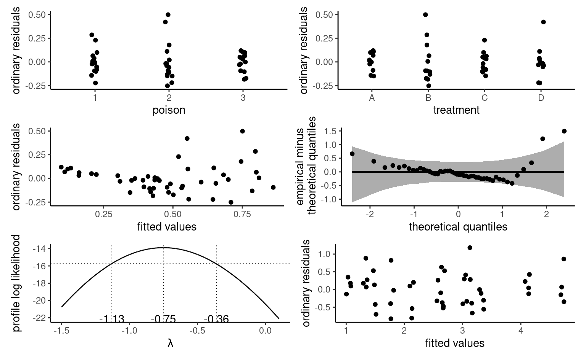

data(LC19_S1, package = "hecedsm")
modmat <- model.matrix( # extract model matrix
~ familiarity + consistency,
data = LC19_S1)
tail(modmat, n = 5L) # print first five lines
#> (Intercept) familiarity consistencyinconsistent
#> 92 1 6 1
#> 93 1 4 1
#> 94 1 7 1
#> 95 1 7 1
#> 96 1 7 1
dim(modmat) # dimension of the model matrix
#> [1] 96 34 Linear regression models
4.1 Introduction
The linear regression model, or linear model, is one of the most versatile workhorse for statistical inference. Linear regression is used primarily to evaluate the effects of explanatory variables (oftentimes treatment in an experimental setting) on the mean response of a continuous response, or for prediction. The linear regression specifies the mean of a response variable \(Y\) of a random sample of size \(n\) as a linear function of observed explanatories (also called predictors or covariates) \(X_1, \ldots, X_p\), \[\begin{align} \underset{\text{conditional mean}}{\mathsf{E}(Y_i \mid \boldsymbol{X}_i=\boldsymbol{x}_i)}=\mu_i=\underset{\text{linear combination of explanatories}}{\beta_0 + \beta_1x_{i1} + \cdots + \beta_p x_{ip}}\equiv \mathbf{x}_i\boldsymbol{\beta}. \end{align}\] where \(\mathbf{x}_i = (1, x_{i1}, \ldots, x_{ip})\) is a \((p+1)\) row vector containing a constant and the explanatories of observation \(i\), and \(\boldsymbol{\beta} = (\beta_0, \ldots, \beta_p)^\top\) is a \(p+1\) column vector of coefficients for the mean. The model formulation is conditional on the values of the observed explanatories; this amounts to treating the \(p\) explanatory variables \(X_1, \ldots, X_p\) as non-random quantities, or known in advance. The regression coefficients \(\boldsymbol{\beta}\) is the same for all observations, but the vector of explanatories \(\mathbf{x}_i\) may change from one observation to the next.
Remark 4.1 (Linearity). The model is linear in the coefficients \(\beta_0, \ldots, \beta_p\). The quadratic curve \(\beta_0 + \beta_1x + \beta_2 x^2\) is a linear model because it is a sum of coefficients times functions of explanatories. By contrast, the model \(\beta_0 + \beta_1x^{\beta_2}\) is nonlinear in \(\boldsymbol{\beta}\).
To simplify the notation, we aggregate observations into an \(n\)-vector \(\boldsymbol{Y}\) and the explanatories into an \(n \times (p+1)\) matrix \(\mathbf{X}\) by concatenating a column of ones and the \(p\) column vectors \(\boldsymbol{X}_1, \ldots, \boldsymbol{X}_p\), each containing the \(n\) observations of the respective explanatories. The matrix \(\mathbf{X}\) is termed model matrix (or sometimes design matrix in experimental settings), and it’s \(i\)th row is \(\mathbf{x}_i\).
Assuming that the distribution of the response is drawn from a location family, we may rewrite the linear model in terms of the mean plus an error term, \[\begin{align*} \underset{\text{observation}\vphantom{\mu_i}}{Y_i} = \underset{\text{mean } \mu_i}{\vphantom{Y_i}\mathbf{x}_i\boldsymbol{\beta}} + \underset{\text{error term}\vphantom{\mu_i}}{\vphantom{Y_i}\varepsilon_i}. \end{align*}\] where \(\varepsilon_i\) is the error term specific to observation \(i\), and we assume that the errors \(\varepsilon_1, \ldots, \varepsilon_n\) are independent and identically distributed. We fix the expectation or theoretical mean of \(\varepsilon_i\) to zero to encode the fact we do not believe the model is systematically off, so \(\mathsf{E}(\varepsilon_i \mid \boldsymbol{X}_i=\boldsymbol{x}_i)=0\) \((i=1, \ldots, n)\). The variance term \(\sigma^2\) is included to take into account the fact that no exact linear relationship links \(\boldsymbol{X}_i\) and \(Y_i\), or that measurements of \(Y_i\) are subject to error.
The normal or Gaussian linear model specifies that responses follow a normal distribution, with \(Y_i \mid \boldsymbol{X}_i=\boldsymbol{x}_i \sim \mathsf{normal}(\mathbf{x}_i\boldsymbol{\beta}, \sigma^2)\). The normal distribution is a location-scale family, so \(Y \sim \mathsf{normal}(\mu, \sigma^2)\) is equal in distribution with \(\mu + \varepsilon\) for \(\varepsilon \sim \mathsf{normal}(0, \sigma^2)\).
4.1.1 Motivating examples
We present some motivating examples that are discussed in the sequel.
Example 4.1 (Consistency of product description) Study 1 of Lee and Choi (2019) considered descriptors and the impact on the perception of a product on the discrepancy between the text description and the image. In their first experience, a set of six toothbrushes is sold, but the image shows either a pack of six, or a single one). The authors also measured the prior familiarity with the brand of the item. Participants were recruited using an online panel, and the data in LC19_S1 includes the results of the \(n=96\) participants who passed the attention check (one additional participant response was outlying and removed). We could fit a linear model for the average product evaluation score, prodeval, as a function of the familiarity of the brand familiarity, an integer ranging from 1 to 7, and a dummy variable for the experimental factor consistency, coded 0 for consistent image/text descriptions and 1 if inconsistent. The resulting model matrix is then \(96 \times 3\). The prodeval response is heavily discretized.
Example 4.2 (Teaching to read and pre-post experiments) The BSJ92 data in package hecedsm contains the results of an experimental study by Baumann, Seifert-Kessell, and Jones (1992) on the effectiveness of different reading strategies on understanding of children. These are described in the abstract
Sixty-six fourth-grade students were randomly assigned to one of three experimental groups: (a) a Think-Aloud (TA) group, in which students were taught various comprehension monitoring strategies for reading stories (e.g., self-questioning, prediction, retelling, rereading) through the medium of thinking aloud; (b) a Directed Reading-Thinking Activity (DRTA) group, in which students were taught a predict-verify strategy for reading and responding to stories; or (c) a Directed Reading Activity (DRA) group, an instructed control, in which students engaged in a noninteractive, guided reading of stories.
The data are balanced, as there are 22 observations in each of the three subgroups, of which DR is the control. The researchers applied a series of three tests (an error detection task for test 1, a comprehension monitoring questionnaire for test 2, and the Degrees of Reading Power cloze test labelled test 3). Tests 1 and 2 were administered both before and after the intervention: this gives us a change to establish the average improvement in student by adding pretest1 as covariate for a regression of posttest, for example. The tests 1 were out of 16, but the one administered after the experiment was made more difficult to avoid cases of students getting near full scores. The correlation between pre-test and post-test 1 is \((\widehat{\rho}_1=0.57)\), much stronger than that for the second test \((\widehat{\rho}_2=0.21)\).
Example 4.3 (Gender discrimination in a US college) The college database consists of observational data collected in a college in the United States. The goal of the administration was to investigate potential gender inequality in the salary of faculty members. The data contains the following variables:
salary: nine-month salary of professors during the 2008–2009 academic year (in thousands USD).rank: academic rank of the professor (assistant,associateorfull).field: categorical variable for the field of expertise of the professor, one ofappliedortheoretical.sex: binary indicator for sex, eithermanorwoman.service: number of years of service in the college.years: number of years since PhD.
Example 4.4 (Suggestions increase donations to charities) Study 1 of Moon and VanEpps (2023) considers proportion of donators to a charity. Participants in the online panel were provided with an opportunity to win 25$ and donate part of this amount to a charity of their choosing. The data provided include only people who did not exceed this amount and indicated donating a non-zero amount.
Example 4.5 (Is additional paper wrapping viewed as more eco-friendly?) Sokolova, Krishna, and Döring (2023) consider consumer bias when assessing how eco-friendly packages are. Items such as cereal are packaged in plastic bags, which themselves are covered in a box. They conjecture (and find) that, paradoxically, consumers tend to view the packaging as being more eco-friendly when the amount of cardboard or paper surrounding the box is larger, relative to the sole plastic package. We consider in the sequel the data from Study 2A, which measures the perceived environmental friendliness (PEF, variable pef) as a function of the proportion of paper wrapping (either none, half of the area of the plastic, equal or twice).
4.1.2 Exploratory data analysis
Exploratory data analysis (EDA) is an iterative procedure by which we query the data, using auxiliary information, summary statistics and data visualizations, to better inform our modelling.
It is useful to get a better understanding of the features of the data (sampling frame, missing values, outliers), the nature of the observations, whether responses or explanatories and the relationship between them.
See Chapter 11 of Alexander (2023) for examples. In particular, it is useful to check that
- categorical variables are properly code as factors.
- missing values are properly declared as such using
NA(strings,999, etc.) - there is no missingness patterns (
NAfor some logical values) - there are enough modalities of each level of categorical variables
- there is no explanatory variable derived from the response variable.
- the subset of observations used for statistical analysis is adequate.
- there are no anomalies or outliers that would distort the results.
Example 4.6 (Exploratory data analysis of the college data) Before drafting a model, it is useful to perform an exploratory data analysis. If salary increases with year, there is more heterogeneity in the salary of higher ranked professors: logically, assistant professors are either promoted or kicked out after at most 6 years according to the data. The limited number of years prevents large variability for their salaries.
college data: salaries of professors as a function of the number of years of service and the academic ranking
Salary increases over years of service, but its variability also increases with rank. Note the much smaller number of women in the sample: this will impact our power to detect differences between sex. A contingency table of sex and academic rank can be useful to see if the proportion of women is the same in each rank: women represent 16% of assistant professors and 16% of associate profs, but only 7% of full professors and these are better paid on average.
| assistant | associate | full | |
|---|---|---|---|
| man | 56 | 54 | 248 |
| woman | 11 | 10 | 18 |
Some of the potential explanatory variables of the college data are categorical (rank, sex, field), the latter two being binary. The other two continuous variables, years and service, are strongly correlated with a correlation of 0.91.
Example 4.7 (Handling of missing values) The data for Moon and VanEpps (2023) should be checked to ensure that the description of the data collection matches the structure of the database. Since people who didn’t donate didn’t fill in the amount field, the latter indicates a missing value. All donation amounts are between $0.25 and $25.
data(MV23_S1, package = "hecedsm")
str(MV23_S1)
#> tibble [869 × 4] (S3: tbl_df/tbl/data.frame)
#> $ before : int [1:869] 0 1 0 1 1 1 1 0 1 0 ...
#> $ donate : int [1:869] 0 0 0 1 1 0 1 0 0 1 ...
#> $ condition: Factor w/ 2 levels "open-ended","quantity": 1 1 1 1 2 2 2 1 1 1 ...
#> $ amount : num [1:869] NA NA NA 10 5 NA 20 NA NA 25 ...
summary(MV23_S1)
#> before donate condition amount
#> Min. :0.000 Min. :0.00 open-ended:407 Min. : 0.2
#> 1st Qu.:0.000 1st Qu.:0.00 quantity :462 1st Qu.: 5.0
#> Median :1.000 Median :1.00 Median :10.0
#> Mean :0.596 Mean :0.73 Mean :10.7
#> 3rd Qu.:1.000 3rd Qu.:1.00 3rd Qu.:15.0
#> Max. :1.000 Max. :1.00 Max. :25.0
#> NA's :1 NA's :235If we include amount as response variable, the 235 missing observations will be removed by default by procedures. This is okay if we want to compare the average amount of people who donated, but we need to transform NAs to zeros otherwise. The donate binary variable should not be included as an explanatory variable in a regression model, since it is a perfect predictor of zero amounts.
4.1.3 Mean model specification
The first step of an analysis is deciding which explanatory variables should be added to the mean model specification, and under what form. Models are but approximations of reality; Section 2.1 of Venables (2000) argues that, if we believe the true mean function linking explanatories \(\boldsymbol{X}\) and the response \(Y\) is of the form \(\mathsf{E}(Y \mid \boldsymbol{X}) = f(\boldsymbol{X})\) for \(f\) sufficiently smooth, then the linear model is a first-order approximation. For interpretation purposes, it makes sense to mean-center any continuous explanatory, as this facilitates interpretation.
In an experimental setting, where the experimental group or condition is randomly allocated, we can directly compare the different treatments and draw causal conclusions (since all other things are constant, any detectable difference is due on average to our manipulation). Although we usually refrain from including any other explanatory to keep the design simple, it may be nevertheless helpful to consider some concomitant variables that explain part of the variability to filter background noise and increase power. For example, for the Baumann, Seifert-Kessell, and Jones (1992) data, our interest is in comparing the average scores as a function of the teaching method, we would include group. In this example, it would also make sense to include the pretest1 result as an explanatory. This way, we will model the average difference in improvement from pre-test to post-test rather than the average score.
In an observational setting, people self-select in different groups, so we need to account for differences. Linear models in economics and finance often add control variables to the model to account for potential differences due to socio-demographic variables (age, revenue, etc.) that would be correlated to the group. Any test for coefficients would capture only correlation between the outcome \(Y\) and the postulated explanatory factor of interest.
4.1.4 Continuous explanatories
Continuous explanatories are typically specified by including a single linear term, leading to the simple linear regression of the form \(Y \mid X=x \sim \mathsf{normal}(\beta_0 + \beta x, \sigma^2)\). In this situation \(\beta_0\) is the intercept (the mean value of \(Y\) when \(x=0\)) and \(\beta_1\) is the slope, i.e., the average increase of \(Y\) when \(x\) increases by one unit. Figure 4.2 shows such an example of a model with a single explanatory. As revealed by the exploratory data analysis of Example 4.3, this model is simplistic and clearly insufficient to explain differences in salary.

The intercept \(\beta_0\) is the value when all of \(x_1, \ldots, x_p\) are zero. The interpretation of the other mean parameters in the model depends crucially on the parametrization and on potential interactions or higher order terms.
Generally, we can increase \(X_j\) by one unit and compare the increase in the mean, here for \(X_j\) \[\begin{align*} \mathsf{E}(Y \mid X_j=x_j+1, \boldsymbol{X}_{-j} = \boldsymbol{x}_{-j}) - \mathsf{E}(Y \mid X_j=x_j, \boldsymbol{X}_{-j} = \boldsymbol{x}_{-j}) = \beta_j. \end{align*}\]
Another common perspective is to consider the effect of a change in the value of an explanatory variable by looking at the slope. If \(\mu=\mathbf{x}\boldsymbol{\beta}\), then the marginal effect of the \(j\) explanatory \(X_j=x_j\) \((j=1, \ldots, p)\) is the partial derivative of the mean with respect to this value, namely \(\partial \mu/\partial x_j\).
If the relationship between explanatory \(X\) and response \(Y\), as assessed from a scatterplot, is not linear, we may consider more complicated function of the explanatories, as Example 4.8 shows.
Example 4.8 (Quadratic curve for the automobile data) We consider a linear regression model for the fuel autonomy of cars as a function of the power of their motor (measured in horsepower) from the auto dataset. The postulated model, \[\begin{align*}
\texttt{mpg}_i = \beta_0 + \beta_1 \texttt{horsepower}_i + \beta_2 \texttt{horsepower}_i^2 + \varepsilon_i,
\end{align*}\] includes a quadratic term. Figure 4.3 shows the scatterplot with the fitted regression line, above which the line for the simple linear regression for horsepower is added. The marginal effect of an increase of one unit in horsepower is \(\beta_1 + 2\beta_2 \texttt{horsepower}\), which depends on the value of the explanatory.
To fit higher order polynomials, we use the poly as the latter leads to more numerical stability. For general transformations, the I function tells the software interpret the input “as is”. Thus, lm(y~x+I(x^2)), would fit a linear model with design matrix \([\boldsymbol{1}_n\, \mathbf{x}\, \mathbf{x}^2]\).

It appears graphically that the quadratic model fits better than the simple linear alternative: we will assess this hypothesis formally later. For the degree two polynomial, Figure 4.3 show that fuel autonomy decreases rapidly when power increases between 50 to 100, then more slow until 189.35 hp. After that, the model postulates that autonomy increases again as evidenced by the scatterplot, but beware of extrapolating (weird things can happen beyond the range of the data, as exemplified by Hassett’s cubic model for the number of daily cases of Covid19 in the USA).
The representation in Figure 4.3 may seem counter-intuitive given that we fit a linear model, but it is a 2D projection of 3D coordinates for the equation \(\beta_0 + \beta_1x-y +\beta_2z =0\), where \(x=\texttt{horsepower}\), \(z=\texttt{horsepower}^2\) and \(y=\texttt{mpg}\). Physics and common sense force \(z = x^2\), and so the fitted values lie on a curve in a 2D subspace of the fitted plan, as shown in grey in the three-dimensional Figure 4.4.
auto data.
Remark 4.2 (Discretization of continuous covariates). Another option is to transform a continuous variable \(X\) into a categorical variable by discretizing into bins and fitting a piecewise-linear function of \(X\). The prime example of such option is treating a Likert scale as a categorical variable. While this allows one to fit more flexible functional relations between \(X\) and \(Y\), this comes at the cost of additional coefficients for the same estimation budget (fewer observations to estimate the effect of \(X\) results in lower precision of the coefficients).
4.1.5 Categorical covariates
Dummies are variables (columns of explanatories from the model matrix) which only include \(-1\), \(0\) and \(1\) to give indicator of the level of groups. For a binary outcome, we can create a column that has entries \(1\) for the treatment and \(0\) for the control group.
Example 4.9 (Linear models with a single binary variable) Moon and VanEpps (2023) consider the impact of providing suggested amounts for donations to a charity (as opposed to an open-ended request). In Study 1, participants were given the chance of winning 25$ and giving part of this amount to charity.
Consider for example a linear model that includes the amount (in dollars, from 0 for people who did not donate, up to 25 dollars) as a function of \[\begin{align*}\texttt{condition} = \begin{cases} 0 , & \text{open-ended},\\
1, & \text{suggested quantity}
\end{cases}
\end{align*}\] The equation of the simple linear model that includes the binary variable condition is \[\begin{align*}
\mathsf{E}(\texttt{amount} \mid \texttt{condition})&= \beta_0 + \beta_1 \mathbf{1}_{\texttt{condition}=\texttt{quantity}}.
\\&= \begin{cases}
\beta_0, & \texttt{condition}=0, \\
\beta_0 + \beta_1 & \texttt{condition}=1.
\end{cases}
\end{align*}\] Let \(\mu_0\) denote the theoretical average amount for the open-ended amount and \(\mu_1\) that of participants of the treatment quantity group. A linear model that only contains a binary variable \(X\) as regressor amounts to specifying a different mean for each of two groups: the average of the treatment group is \(\beta_0 + \beta_1 = \mu_1\) and \(\beta_1=\mu_1-\mu_0\) represents the difference between the average donation amount of people given open-ended amounts and those who are offered suggested amounts (quantity), including zeros for the amount of people who did not donate. The parametrization of the linear model with \(\beta_0\) and \(\beta_1\) is in terms of pairwise differences relative to the baseline category and is particularly useful if we want to test for mean difference between the groups, as this amounts to testing \(\mathscr{H}_0: \beta_1=0\).

MV23_S1 data using the binary variable condition as explanatory even if the equation defines a line, only its values in \(0/1\) are realistic.
Even if the linear model defines a line, the latter is only meaningful when evaluated at \(0\) or \(1\); Figure 4.6 shows it in addition to sample observations (jittered horizontally) and a density estimate for each condition. The colored dot represents the mean, which will coincide with the estimates.
It is clear that the data are heavily discretized, with lots of ties and zeros. However, given the sample size of 869 observations, we can easily draw conclusions in each group.
Let us consider categorical variables with \(K > 2\) levels, which in R are of class factor. The default parametrization for factors are in terms of treatment contrast: the reference level of the factor (by default, the first value in alphanumerical order) will be treated as the reference category and assimilated to the intercept. The software will then create a set of \(K-1\) dummy variables for a factor with \(K\) levels, each of which will have ones for the relevant value and zero otherwise.
Example 4.10 (Dummy coding for categorical variables) Consider the Baumann, Seifert-Kessell, and Jones (1992) study presented in Example 4.2, where we only include group as explanatory variable. The data are ordered by group: the first 22 observations are for group DR, the 22 next ones for group DRTA and the last 22 for TA. If we fit a model with group as categorical variables
class(BSJ92$group) # Check that group is a factor
#> [1] "factor"
levels(BSJ92$group) # First level shown is reference
#> [1] "DR" "DRTA" "TA"
# Print part of the model matrix
# (three individuals from different groups)
model.matrix(~ group, data = BSJ92)[c(1,23,47),]
#> (Intercept) groupDRTA groupTA
#> 1 1 0 0
#> 23 1 1 0
#> 47 1 0 1
# Compare with levels of factors recorded
BSJ92$group[c(1,23,47)]
#> [1] DR DRTA TA
#> Levels: DR DRTA TAThe mean model specification is \[\mathsf{E}(Y \mid \texttt{group})= \beta_0 + \beta_1\mathbf{1}_{\texttt{group}=\texttt{DRTA}} + \beta_2\mathbf{1}_{\texttt{group}=\texttt{TA}}.\] Since the variable group is categorical with \(K=3\) levels, we need \(K-1 = 2\) dummy explanatories to include the effect and obtain one average per group. With the default parametrization, we obtain
- \(\mathbf{1}_{\texttt{group}=\texttt{DRTA}}=1\) if
group=DRTAand zero otherwise. - \(\mathbf{1}_{\texttt{group}=\texttt{TA}}=1\) if
group=TAand zero otherwise.
Because the model includes an intercept and the model ultimately describes three group averages, we only need two additional variables. With the treatment parametrization, the group mean of the reference group equals the intercept coefficient, \(\mu_{\texttt{DR}}=\beta_0\),
| (Intercept) | groupDRTA | groupTA | |
|---|---|---|---|
| DR | 1 | 0 | 0 |
| DRTA | 1 | 1 | 0 |
| TA | 1 | 0 | 1 |
When group=DR (baseline), both indicator variables groupDRTA and groupTA are zero. The average in each group is \(\mu_{\texttt{DR}} = \beta_0\), \(\mu_{\texttt{DRTA}}=\beta_0 + \beta_1\) and \(\mu_{\texttt{TA}} = \beta_0 + \beta_2\). We thus find that \(\beta_1\) is the difference in mean between group DRTA and group DR, and similarly \(\beta_2=\mu_{\texttt{TA}}- \mu_{\texttt{DR}}\).
Remark 4.3 (Sum-to-zero constraints). The parametrization discussed above, which is the default for the lm function, isn’t the only one available. We consider an alternative ones: rather than comparing each group mean with that of a baseline category, the default parametrization for analysis of variance models is in terms of sum-to-zero constraints, whereby the intercept is the equiweighted average of every group, and the parameters \(\beta_1, \ldots, \beta_{K-1}\) are differences to this average.
model.matrix(
~ group,
data = BSJ92,
contrasts.arg = list(group = "contr.sum"))| (Intercept) | group1 | group2 | |
|---|---|---|---|
| DR | 1 | 1 | 0 |
| DRTA | 1 | 0 | 1 |
| TA | 1 | -1 | -1 |
In the sum-to-zero constraint, we again only get two dummy variables, labelled group1 and group2, along with the intercept. The value of group1 is \(1\) if group=DR, \(0\) if group=DRTA and \(-1\) if group=TA. Using the invariance property, we find \(\mu_{\texttt{DR}} = \beta_0 + \beta_1\), \(\mu_{\texttt{DRTA}}=\beta_0 + \beta_2\) and \(\mu_{\texttt{TA}} = \beta_0 - \beta_1 - \beta_2\) (more generally, the intercept minus the sum of all the other mean coefficients). Some algebraic manipulation reveals that \(\beta_0 = (\mu_{\texttt{DR}} +\mu_{\texttt{DRTA}}+\mu_{\texttt{TA}})/3\).
If we removed the intercept, then we could include three dummies for each treatment group and each parameter would correspond to the average. This isn’t recommended in R because the software treats models without the intercept differently and some output will be nonsensical (e.g., the coefficient of determination will be wrong).
Example 4.11 (Wage inequality in an American college) We consider a linear regression model for the college data that includes sex, academic rank, field of study and the number of years of service as explanatories.
The postulated model is \[\begin{align*} \texttt{salary} &= \beta_0 + \beta_1 \texttt{sex}_{\texttt{woman}} +\beta_2 \texttt{field}_{\texttt{theoretical}} \\&\quad +\beta_3 \texttt{rank}_{\texttt{associate}} +\beta_4 \texttt{rank}_{\texttt{full}} +\beta_5 \texttt{service} + \varepsilon. \end{align*}\]
| \(\widehat{\beta}_0\) | \(\widehat{\beta}_1\) | \(\widehat{\beta}_2\) | \(\widehat{\beta}_3\) | \(\widehat{\beta}_4\) | \(\widehat{\beta}_5\) |
|---|---|---|---|---|---|
| 86596 | -4771 | -13473 | 14560 | 49160 | -89 |
The interpretation of the coefficients is as follows:
- The estimated intercept is \(\widehat{\beta}_0=86596\) dollars; it corresponds to the mean salary of men assistant professors who just started the job and works in an applied domain.
- everything else being equal (same field, academic rank, and number of years of service), the estimated salary difference between a woman and is estimated at \(\widehat{\beta}_1=-4771\) dollars.
- ceteris paribus, the salary difference between a professor working in a theoretical field and one working in an applied field is \(\beta_2\) dollars: our estimate of this difference is \(-13473\) dollars, meaning applied pays more than theoretical.
- ceteris paribus, the estimated mean salary difference between associate and assistant professors is \(\widehat{\beta}_3=14560\) dollars.
- ceteris paribus, the estimated mean salary difference between full and assistant professors is \(\widehat{\beta}_4=49160\) dollars.
- within the same academic rank, every additional year of service leads to a mean salary increase of \(\widehat{\beta}_5=-89\) dollars.
Example 4.12 (Parameter interpretation for analysis of covariance) We consider a pre-post model for the error detection task test of Baumann, Seifert-Kessell, and Jones (1992). We fit a linear model with the pre-test score and the experimental condition.
data(BSJ92, package = "hecedsm") #load data
str(BSJ92) # Check that categorical variables are factors
#> tibble [66 × 6] (S3: tbl_df/tbl/data.frame)
#> $ group : Factor w/ 3 levels "DR","DRTA","TA": 1 1 1 1 1 1 1 1 1 1 ...
#> $ pretest1 : int [1:66] 4 6 9 12 16 15 14 12 12 8 ...
#> $ pretest2 : int [1:66] 3 5 4 6 5 13 8 7 3 8 ...
#> $ posttest1: int [1:66] 5 9 5 8 10 9 12 5 8 7 ...
#> $ posttest2: int [1:66] 4 5 3 5 9 8 5 5 7 7 ...
#> $ posttest3: int [1:66] 41 41 43 46 46 45 45 32 33 39 ...
# Check summary statistics for posttest1
BSJ92 |> # compute group average
group_by(group) |>
summarize(mean_pre = mean(pretest1),
mean_post = mean(posttest1),
diff_impr = mean_post - mean_pre)
#> # A tibble: 3 × 4
#> group mean_pre mean_post diff_impr
#> <fct> <dbl> <dbl> <dbl>
#> 1 DR 10.5 6.68 -3.82
#> 2 DRTA 9.73 9.77 0.0455
#> 3 TA 9.14 7.77 -1.36
# Fit the ANOVA for the difference
linmod1 <- lm(
posttest1 - pretest1 ~ group,
data = BSJ92)
coef(linmod1) # Mean model coefficients
#> (Intercept) groupDRTA groupTA
#> -3.82 3.86 2.45
# Fit a linear regression
linmod2 <- lm(
posttest1 ~ pretest1 + group,
data = BSJ92 |>
dplyr::mutate( # mean-center pretest result
pretest1 = pretest1 - mean(pretest1)))
coef(linmod2) # Mean model coefficients
#> (Intercept) pretest1 groupDRTA groupTA
#> 6.188 0.693 3.627 2.036With the ANOVA model for the group as a function of the improvement and using the default treatment parameterization,, the intercept is the average of post-test minus pre-test score for group DR, and the other two coefficients are the difference between groups DRTA and DR, and the difference between groups TA and DR. Thus, the higher average improvement is for DRTA, then TA, then the baseline DR.
Consider next a linear model in which we allow the post-test score to be a linear function of the pre-test. We find that, for each point score on the pre-test, the post-test score increases by 0.693 marks regardless of the group. The DRTA group (respectively TA) has an average, ceteris paribus, that is 3.627 (respectively 2.036) points higher than that of the baseline group DR for two people with the same pre-test score. If we center the continuous covariate pretest1, the intercept \(\beta_0\) is the average post-test score of a person from the DR group who scored the overall average of all 66 students in the pre-test.
4.2 Parameter estimation
The linear model includes \(p+1\) mean parameters and a standard deviation \(\sigma\), which is assumed constant for all observations. Given a design or model matrix \(\mathbf{X}\) and a linear model formulation \(\mathsf{E}(Y_i) = \mathbf{x}_i\boldsymbol{\beta}\), we can try to find the parameter vector \(\boldsymbol{\beta} \in \mathbb{R}^{p+1}\) that minimizes the mean squared error, i.e., the average squared vertical distance between the fitted values \(\widehat{y}_i=\mathbf{x}_i\widehat{\boldsymbol{\beta}}\) and the observations \(y_i\).
Proposition 4.1 (Ordinary least squares) Consider the optimization problem \[\begin{align*} \widehat{\boldsymbol{\beta}}&=\mathrm{arg min}_{\boldsymbol{\beta} \in \mathbb{R}^{p+1}}\sum_{i=1}^n (y_i-\mathbf{x}_i\boldsymbol{\beta})^2 \\&=(\boldsymbol{y}-\mathbf{X}\boldsymbol{\beta})^\top(\boldsymbol{y}-\mathbf{X}\boldsymbol{\beta}). \end{align*}\] We can compute the derivative of the right hand side with respect to \(\boldsymbol{\beta}\), set it to zero and solve for \(\widehat{\boldsymbol{\beta}}\), \[\begin{align*} \mathbf{0}_n&=\frac{\partial}{\partial\boldsymbol{\beta}}(\boldsymbol{y}-\mathbf{X}\boldsymbol{\beta})^\top(\boldsymbol{y}-\mathbf{X}\boldsymbol{\beta})\\ \\&=\frac{\partial (\boldsymbol{y}-\mathbf{X}\boldsymbol{\beta})}{\partial \boldsymbol{\beta}}\frac{\partial (\boldsymbol{y}-\mathbf{X}\boldsymbol{\beta})^\top(\boldsymbol{y}-\mathbf{X}\boldsymbol{\beta})}{\partial (\boldsymbol{y}-\mathbf{X}\boldsymbol{\beta})}\\ \\&=2\mathbf{X}^\top (\boldsymbol{y}-\mathbf{X}\boldsymbol{\beta}) \end{align*}\] using the chain rule. Distributing the terms leads to the so-called normal equation \[\begin{align*} \mathbf{X}^\top \mathbf{X}\boldsymbol{\beta}&=\mathbf{X}^\top \boldsymbol{y}. \end{align*}\] If the \(n \times p\) matrix \(\mathbf{X}\) is full-rank, meaning that it’s columns are not linear combinations of one another, the quadratic form \(\mathbf{X}^\top \mathbf{X}\) is invertible and we obtain the solution to the least square problems, \[ \widehat{\boldsymbol{\beta}} = \left(\mathbf{X}^\top \mathbf{X}\right)^{-1}\mathbf{X}^\top \boldsymbol{y}. \tag{4.1}\] This is the ordinary least squares estimator (OLS). The explicit solution means that no numerical optimization is needed for linear models.
We could also consider maximum likelihood estimation. Proposition 4.1 shows that, assuming normality of the errors, the least square estimators of \(\boldsymbol{\beta}\) coincide with the maximum likelihood estimator of \(\boldsymbol{\beta}\).
Proposition 4.2 (Maximum likelihood estimation of the normal linear model) The linear regression model specifies that the observations \(Y_i \sim \mathsf{normal}(\mathbf{x}_i\boldsymbol{\beta}, \sigma^2)\) are independent. The linear model has \(p+2\) parameters (\(\boldsymbol{\beta}\) and \(\sigma^2\)) and the log likelihood is, abstracting from constant terms, \[\begin{align*} \ell(\boldsymbol{\beta}, \sigma)&\propto-\frac{n}{2} \ln (\sigma^2) -\frac{1}{2\sigma^2}\left\{(\boldsymbol{y}-\mathbf{X}\boldsymbol{\beta})^\top(\boldsymbol{y}-\mathbf{X}\boldsymbol{\beta})\right\}^2. \end{align*}\] Maximizing the log likelihood with respect to \(\boldsymbol{\beta}\) is equivalent to minimizing the sum of squared errors \(\sum_{i=1}^n (y_i - \mathbf{x}_i\boldsymbol{\beta})^2\), regardless of the value of \(\sigma\), and we recover the OLS estimator \(\widehat{\boldsymbol{\beta}}\). The maximum likelihood estimator of the variance \(\widehat{\sigma}^2\) is thus \[\begin{align*} \widehat{\sigma}^2=\mathrm{arg max}_{\sigma^2} \ell(\widehat{\boldsymbol{\beta}}, \sigma^2). \end{align*}\] The profile log likelihood for \(\sigma^2\), excluding constant terms that don’t depend on \(\sigma^2\), is \[\begin{align*} \ell_{\mathrm{p}}(\sigma^2) &\propto-\frac{1}{2}\left\{n\ln\sigma^2+\frac{1}{\sigma^2}(\boldsymbol{y}-\mathbf{X}\hat{\boldsymbol{\beta}})^\top(\boldsymbol{y}-\mathbf{X}\hat{\boldsymbol{\beta}})\right\}. \end{align*}\] Differentiating each term with respect to \(\sigma^2\) and setting the gradient equal to zero yields the maximum likelihood estimator \[\begin{align*} \widehat{\sigma}^2&=\frac{1}{n}(\boldsymbol{Y}-\mathbf{X}\hat{\boldsymbol{\beta}})^\top(\boldsymbol{Y}-\mathbf{X}\hat{\boldsymbol{\beta}})\\&= \frac{1}{n} \sum_{i=1}^n (y_i - \mathbf{x}_i\widehat{\boldsymbol{\beta}})^2\\&= \frac{\mathsf{SS}_e}{n}; \end{align*}\] where \(\mathsf{SS}_e\) is the sum of squared residuals. The usual unbiased estimator of \(\sigma^2\) calculated by software is \(S^2=\mathsf{SS}_e/(n-p-1)\), where the denominator is the sample size \(n\) minus the number of mean parameters \(\boldsymbol{\beta}\), \(p+1\).
Proposition 4.3 (Information matrix for normal linear regression models) The entries of the observed information matrix of the normal linear model are \[\begin{align*} -\frac{\partial^2 \ell(\boldsymbol{\beta}, \sigma^2)}{\partial \boldsymbol{\beta}\partial \boldsymbol{\beta}^\top} &= \frac{1}{\sigma^2} \frac{\partial \mathbf{X}^\top(\boldsymbol{y}-\mathbf{X}\boldsymbol{\beta})}{\partial \boldsymbol{\beta}^\top} = \frac{\mathbf{X}^\top\mathbf{X}}{\sigma^2}\\ -\frac{\partial^2 \ell(\boldsymbol{\beta}, \sigma^2)}{\partial \boldsymbol{\beta}\partial \sigma^2} &=- \frac{\mathbf{X}^\top(\boldsymbol{y}-\mathbf{X}\boldsymbol{\beta})}{\sigma^4}\\ -\frac{\partial^2 \ell(\boldsymbol{\beta}, \sigma^2)}{\partial (\sigma^2)^2} &= -\frac{n}{2\sigma^4} + \frac{(\boldsymbol{y}-\mathbf{X}\boldsymbol{\beta})^\top(\boldsymbol{y}-\mathbf{X}\boldsymbol{\beta})}{\sigma^6}. \end{align*}\] If we evaluate the observed information at the MLE, we get \[\begin{align*} j(\widehat{\boldsymbol{\beta}}, \widehat{\sigma^2}) = \begin{pmatrix} \frac{\mathbf{X}^\top\mathbf{X}}{\widehat{\sigma^2}} & \boldsymbol{0}_{p+1} \\ \boldsymbol{0}_{p+1}^\top & \frac{n}{2\widehat{\sigma^4}} \end{pmatrix} \end{align*}\] since \(\widehat{\sigma}^2=\mathsf{SS}_e/n\) and the residuals are orthogonal to the model matrix. Since \(\mathsf{E}(Y \mid \mathbf{X})=\mathbf{X}\boldsymbol{\beta}\), the Fisher information is \[\begin{align*} i(\boldsymbol{\beta}, \sigma^2) = \begin{pmatrix} \frac{\mathbf{X}^\top\mathbf{X}}{\sigma^2} & \boldsymbol{0}_{p+1} \\ \boldsymbol{0}_{p+1}^\top & \frac{n}{2\sigma^4} \end{pmatrix} \end{align*}\] Since zero off-correlations in normal models amount to independence, the MLE for \(\sigma^2\) and \(\boldsymbol{\beta}\) are independent. Provided the \((p+1)\) square matrix \(\mathbf{X}^\top\mathbf{X}\) is invertible, the large-sample variance of the ordinary least squares estimator is \(\sigma^2(\mathbf{X}^\top\mathbf{X})^{-1}\) and that of the MLE of the variance is \(2\sigma^4/n\).
Proposition 4.4 (Fitting linear models with software) Although we could build the model matrix ourselves and use the least square formula of Equation 4.1, the numerical routines implemented in software are typically better behaved. The lm function in R fits linear models, as does glm with the default arguments. Objects of class lm have multiple methods allow you to extract specific objects from lm objects. For example, the functions coef, resid, fitted, model.matrix will return the coefficients \(\widehat{\boldsymbol{\beta}},\) the ordinary residuals \(\boldsymbol{e},\) the fitted values \(\widehat{\boldsymbol{y}}\) and the model matrix \(\mathbf{X}\).
data(BSJ92, package = "hecedsm") #load data
str(BSJ92) # Check that categorical variables are factors
# Fit the linear regression
linmod <- lm(posttest1 ~ pretest1 + group,
data = BSJ92)
beta_hat <- coef(linmod) # beta coefficients
vcov_beta <- vcov(linmod) # Covariance matrix of betas
summary(linmod) # summary table
beta_ci <- confint(linmod) # Wald confidence intervals for betas
yhat <- fitted(linmod) # fitted values
e <- resid(linmod) # ordinary residuals
# Check OLS formula
X <- model.matrix(linmod) # model matrix
y <- college$salary
isTRUE(all.equal(
c(solve(t(X) %*% X) %*% t(X) %*% y),
as.numeric(coef(linmod))
))The summary method is arguably the most useful: it will print mean parameter estimates along with standard errors, \(t\) values for the Wald test of the hypothesis \(\mathscr{H}_0: \beta_i=0\) and the associated \(p\)-values. Other statistics and information about the sample size, the degrees of freedom, etc., are given at the bottom of the table. Note that the lm function uses the unbiased estimator of the variance \(\sigma^2\), denoted \(S^2\) in this chapter.
4.3 Predictions
When we compute least square estimates, we obtain fitted values \(\widehat{\boldsymbol{y}}\) as \(\mathbf{X}\widehat{\boldsymbol{\beta}}\), where \(\mathbf{X}\) denotes the \(n \times (p+1)\) model matrix. We can also obtain an estimate of the mean surface for any new row vector of explanatories \(\mathbf{x}^* = (1, x^*_1, \ldots, x^*_p)\), knowing that \(\mathsf{E}(Y \mid \mathbf{x}^*)=\mathbf{x}^*\boldsymbol{\beta}\), by replacing the unknown coefficients \(\boldsymbol{\beta}\) by our estimates \(\widehat{\boldsymbol{\beta}}\). This yields the best linear unbiased predictor of the mean.
If we want to predict the value of a new observation, say \(Y^*\), with known explanatories \(\mathbf{x}^*\), the prediction will thus be \(\widehat{y}^* = \mathbf{x}^*\widehat{\boldsymbol{\beta}}\) because \[\begin{align*} \mathsf{E}(\widehat{Y}^* \mid \mathbf{X}, \mathbf{x}^*) = \mathsf{E}(\mathbf{x}^*\widehat{\boldsymbol{\beta}}\mid \mathbf{X}, \mathbf{x}^*) = \mathbf{x}^*\boldsymbol{\beta}. \end{align*}\] However, individual observations vary more than averages (which are themselves based on numerous observations). Intuitively, this is due to the added uncertainty of the error term appearing in the model equation: the variability of new predictions is the sum of uncertainty due to the estimators (based on random data) and the intrinsic variance of the observations assuming the new observation is independent of those used to estimate the coefficients, \[\begin{align*} \mathsf{Va}(Y^*-\widehat{Y}^* \mid \mathbf{X}, \mathbf{x}^*) &= \mathsf{Va}(Y^* - \mathbf{x}^*\widehat{\boldsymbol{\beta}} \mid \mathbf{X}, \mathbf{x}^*) \\&=\mathsf{Va}(Y^* \mid \mathbf{X}, \mathbf{x}^*) + \mathsf{Va}(\mathbf{x}^*\widehat{\boldsymbol{\beta}} \mid \mathbf{X}, \mathbf{x}^*) \\& = \sigma^2\mathbf{x}^{*\vphantom{\top}}(\mathbf{X}^\top\mathbf{X})^{-1}\mathbf{x}^{*\top} + \sigma^2, \end{align*}\] and we can base the prediction interval on the Student distribution, as \[\begin{align*} \frac{Y^*-\mathrm{x}^*\widehat{\boldsymbol{\beta}}}{\sqrt{S^2\{1+\mathrm{x}^*(\mathbf{X}^\top\mathbf{X})^{-1}\mathrm{x}^{*\top}\}}}\sim \mathsf{Student}(n-p-1). \end{align*}\] We obtain \(1-\alpha\) prediction interval for \(Y^*\) by inverting the test statistic, \[\begin{align*} \mathrm{x}^*\widehat{\boldsymbol{\beta}}\pm \mathfrak{t}_{n-p-1}(\alpha/2)\sqrt{S^2\{1+\mathrm{x}^*(\mathbf{X}^\top\mathbf{X})^{-1}\mathrm{x}^{*\top}\}}. \end{align*}\] Similar calculations yield the formula for pointwise confidence intervals for the mean, \[\begin{align*} \mathrm{x}^*\widehat{\boldsymbol{\beta}}\pm \mathfrak{t}_{n-p-1}(\alpha/2)\sqrt{S^2\mathrm{x}^*(\mathbf{X}^\top\mathbf{X})^{-1}\mathrm{x}^{*\top}}. \end{align*}\] The two differ only because of the additional variance of individual observations.
Example 4.13 (Prediction for simple linear regression) Consider the data of Example 4.5. We fit a simple linear regression of the form \(\texttt{pef} = \beta_0 + \beta_1 \texttt{proportion} + \varepsilon\) with \(\varepsilon \sim \mathsf{normal}(0,\sigma^2)\) and observations assumed independent.
Figure 4.8 shows pointwise uncertainty bands for a simple linear regression of the data Sokolova, Krishna, and Döring (2023) as a function of the paper to plastic proportion, with larger values indicating more spurious paper wrapping. The model is not accounting for the fact that our response arises from a bounded discrete distribution with integer values ranging from 1 to 7, and that the ratios tested in the experiment are 0 (no paper), 0.5, 1 and 2. The middle line gives the prediction of individuals as we vary the proportion paper/plastic. Looking at the formulas for the confidence and prediction intervals, it is clear that the bands are not linear (we consider the square root of a function that involves the predictors), but it is not obvious that the uncertainty increases as you move away from the average of the predictors.
This is more easily seen by replicating the potential curves that could have happened with different data: Figure 4.8 shows generated new potential slopes from the asymptotic normal distribution of \(\widehat{\boldsymbol{\beta}}\) estimators. The hyperbolic shape is not surprising: we are basically tilting curves from the average pef/proportion, and they have higher potential from deviating the further we are from the average in each direction. The prediction intervals (pale grey) are very large and essentially cover the whole scope of potential values for the perceived environmental friendliness Likert scale, except for a couple of observations. By contrast, the confidence intervals for the mean are quite narrow, as a result of the large sample size. We can see also that the curves do not deviate much from them.
pef) as a function of the proportion of paper to plastic, with horizontally jittered observations. The plot shows predictions along with pointwise 95% confidence intervals of the mean and the individual predictions. The \(y\)-axis has been truncated.
In R, the generic predict takes as input a model and a newdata argument contains a data frame with the same structure as the original data used to fit the model (or at least the columns of explanatory variables used).
data(SKD23_S2A, package = "hecedsm") # load data
lm_simple <- lm(pef ~ proportion, data = SKD23_S2A) # fit simple linear regression
predict(lm_simple,
newdata = data.frame(proportion = c(0, 0.5, 1, 2)),
interval = "prediction") # prediction intervals
predict(lm_simple,
newdata = data.frame(proportion = c(0, 0.5, 1, 2)),
interval = "confidence") # confidence for meanproportion |
prediction | lower | upper |
|---|---|---|---|
| 0.0 | 2.41 | -0.168 | 4.98 |
| 0.5 | 2.67 | 0.097 | 5.24 |
| 1.0 | 2.93 | 0.361 | 5.51 |
| 2.0 | 3.46 | 0.884 | 6.04 |
| mean | lower CI | upper CI |
|---|---|---|
| 2.41 | 2.27 | 2.55 |
| 2.67 | 2.57 | 2.77 |
| 2.93 | 2.84 | 3.02 |
| 3.46 | 3.30 | 3.62 |
Remark 4.4 (Notation). It is important to distinguish the equation of the stochastic model, expressed in terms of random variables \(\mathsf{E}(Y_i \mid \boldsymbol{x}_i) = \mathbf{x}_i\boldsymbol{\beta} + \varepsilon_i\) and the equation of the fitted values or predictions, \[\begin{align*} \widehat{\mathsf{E}(Y_i \mid \mathbf{x}_i)} \mathbf{x}_i\widehat{\boldsymbol{\beta}} \end{align*}\] The prediction does not involve unknown error terms.
4.4 Hypothesis testing
Hypothesis testing in linear models and analysis of variance proceeds as usual: we compare two nested models, one of which (the null model) is a simplification of a more complex one obtaining by imposing restrictions on the mean coefficients.
Of particular interest are tests of restrictions for components of \(\boldsymbol{\beta}\). The large sample properties of the maximum likelihood estimator imply that \[\begin{align*} \widehat{\boldsymbol{\beta}} \stackrel{\cdot}{\sim}\mathsf{normal}_{p+1}\left\{\boldsymbol{\beta}, \sigma^2(\mathbf{X}^\top\mathbf{X})^{-1}\right\} \end{align*}\] for sufficiently large sample size, and this result is exact for normal data. One can thus easily estimate the standard errors from the matrix upon replacing \(\sigma^2\) by an estimator. With normal data, one can show that \(\mathsf{SS}_e \sim \sigma^2\chi^2_{n-p-1}\) and \(\mathsf{SS}_e\) is independent of \(\widehat{\boldsymbol{\beta}}\).
In an inferential setting, it’s often important to test whether the effect of an explanatory variable is significant: if \(x_j\) is binary or continuous, the test for \(\mathscr{H}_0: \beta_j=0\) corresponds to a null marginal effect for \(x_j\). The null model is a linear regression in which we remove the \((j+1)\)st column of \(\mathbf{X}\).
Proposition 4.5 (Wald tests in linear regression) Recall that the Wald test statistic for the hypothesis \(\mathscr{H}_0: \beta_j=b\) is \[W = \frac{\widehat{\beta}_j - b}{\mathsf{se}(\widehat{\beta}_j)}.\] The Wald test statistic is reported by most software for the hypothesis \(b=0\). Since \(\mathsf{Var}(\widehat{\beta}_j) = \sigma^2 [(\mathbf{X}^\top\mathbf{X})^{-1}]_{j,j}\), we can estimate standard error from \(S^2\) and derive that the distribution of \(W\) under the null hypothesis is \(\mathsf{Student}(n-p-1)\). This explains the terminology “\(t\) values” in the summary table. In addition to coefficient estimates, it is possible to obtain Wald-based confidence intervals for \(\beta_j\), which are the usual \(\widehat{\beta}_j \pm \mathfrak{t}_{n-p-1,\alpha/2} \mathsf{se}(\widehat{\beta}_j)\), with \(\mathfrak{t}_{n-p-1,\alpha/2}\) denoting the \(1-\alpha/2\) quantile of the \(\mathsf{Student}({n-p-1})\) distribution.
Example 4.14 Consider the data from Example 4.5. If we fit againt the simple linear regression model, we can extract the \(p\)-values for the Wald or \(t\)-tests. The test for the intercept is of no interest since data are measured on a scale from 1 to 7, so the mean response when proportion=0 cannot be zero. The coefficient for proportion suggests a trend of 0.5 point per unit ratio, and this is significantly different from zero, indicating that the pef score changes with the paper to plastic ratio.
summary(lm_simple)$coefficients # t-tests (Wald) for beta=0 with p-values
#> Estimate Std. Error t value Pr(>|t|)
#> (Intercept) 2.407 0.0723 33.31 2.56e-153
#> proportion 0.526 0.0618 8.51 8.40e-17
confint(lm_simple) # confidence intervals for betas
#> 2.5 % 97.5 %
#> (Intercept) 2.266 2.549
#> proportion 0.405 0.648For categorical variables with more than two levels, testing if \(\beta_j=0\) is typically not of interest because the coefficient represents the difference between the category \(x_j\) and the baseline with the treatment contrast parametrization: these two categories could have a small difference, but the categorical variable as a whole may still be a useful predictor given the other explanatories. The hypothesis of zero contrast is awkward because it implies a null model in which selected categories are merged, but then depends on the reference category. Rather, we wish to compare a model in which all variables are present with one in which the categorical explanatory is omitted.
Proposition 4.6 (F-tests for comparison of nested linear models) Consider the full linear model which contains \(p\) predictors, \[\begin{align*} \mathbb{M}_1: Y=\beta_0+\beta_1 x_1 + \cdots + \beta_g x_g + \beta_{k+1}x_{k+1} + \ldots + \beta_p x_p + \varepsilon. \end{align*}\] Suppose without loss of generality that we want to test \(\mathscr{H}_0: \beta_{k+1}=\beta_{k+2}=\cdots=\beta_p=0\) (one could permute columns of the model matrix to achieve this configuration). The global hypothesis specifies that \((p-k)\) of the \(\beta\) parameters are zero. The restricted model corresponding to the null hypothesis contains only the covariates for which \(\beta_j \neq 0\), \[\begin{align*} \mathbb{M}_0: Y=\beta_0+\beta_1 x_1 + \ldots + \beta_k x_k + \varepsilon. \end{align*}\] Let \(\mathsf{SS}_e(\mathbb{M}_1)\) be the residuals sum of squares for model \(\mathbb{M}_1\), \[\begin{align*} \mathsf{SS}_e(\mathbb{M}_1)=\sum_{i=1}^n (Y_i-\widehat{Y}_i^{\mathbb{M}_1})^2, \end{align*}\] where \(\widehat{Y}_i^{\mathbb{M}_1}\) is the \(i\)th fitted value from \(\mathbb{M}_1\). Similarly define \(\mathsf{SS}_e(\mathbb{M}_0)\) for the residuals sum of square of \(\mathbb{M}_0\). Clearly, \(\mathsf{SS}_e(\mathbb{M}_0) \geq \mathsf{SS}_e(\mathbb{M}_1)\) (why?)
The \(F\)-test statistic is \[\begin{align*} F=\frac{\{\mathsf{SS}_e(\mathbb{M}_0)-\mathsf{SS}_e(\mathbb{M}_1)\}/(p-k)}{\mathsf{SS}_e(\mathbb{M}_1)/(n-p-1)}. \end{align*}\] Under \(\mathscr{H}_0\), the \(F\) statistic follows a Fisher distribution (Definition 1.15) with \((p-k)\) and \((n-p-1)\) degrees of freedom, \(\mathsf{Fisher}(p-k, n-p-1)\) — \(p-k\) is the number of restrictions, and \(n-p-1\) is sample size minus the number of coefficients for the mean of \(\mathbb{M}_1\).
It turns out that both \(F\) and \(t\)-statistics are equivalent for testing a single coefficient \(\beta_j\): the \(F\)-statistic is the square of the Wald statistic and they lead to the same inference — the \(p\)-value for the test are identical. While it may get reported in tables, the test for \(\beta_0=0\) is not of interest; we keep the intercept merely to centre the residuals.
Remark 4.5 (F-tests versus likelihood ratio tests). For normal linear regression, the likelihood ratio test for comparing models \(\mathbb{M}_1\) and \(\mathbb{M}_0\) is a function of the sum of squared residuals: the usual formula simplifies to \[\begin{align*} R &= n\ln\{\mathsf{SS}_e(\mathbb{M}_0)/\mathsf{SS}_e(\mathbb{M}_1)\}\\ &= n \ln \left( 1+ \frac{p-k}{n-p-1}F\right) \end{align*}\] Both the likelihood ratio test and the \(F\) tests are related via an monotone transformation, and we can use the \(\mathsf{Fisher}\) distribution for comparison, rather than the large-sample \(\chi^2\) approximation. The \(t\)-tests and \(F\)-tests presented above could thus both be viewed as particular cases of likelihood-ratio tests but using Student-\(t\) versus normal distribution when \(p-k=1\), and \(\mathsf{Fisher}\) versus \(\chi^2\) when \(p-k \ge 1\). When \(n\) is large, results are roughly the same.
4.4.1 Contrasts
Suppose we perform an analysis of variance and the \(F\)-test for the (global) null hypothesis that the averages of all groups are equal is very large: we reject the null hypothesis in favor of the alternative, which states that at least one of the group average is different. The follow-up question will be where these differences lie. Indeed, in an experimental context, this implies one or more of the manipulation has a different effect from the others on the mean response. Oftentimes, this isn’t interesting in itself: we could be interested in comparing different options relative to a control group or determine whether specific combinations work better than separately, or find the best treatment by comparing all pairs.
The scientific question of interest that warranted the experiment may lead to a specific set of hypotheses, which can be formulated by researchers as comparisons between means of different subgroups. We can normally express these as contrasts. As Dr. Lukas Meier puts it, if the global \(F\)-test for equality of means is equivalent to a dimly lit room, contrasts are akin to spotlight that let one focus on particular aspects of differences in treatments. Formally speaking, a contrast is a linear combination of averages: in plain English, this means we assign a weight to each group average and add them up, and then compare that summary to a postulated value \(a\), typically zero. Contrasts encode research question of interest: if \(c_i\) denotes the weight of group average \(\mu_i\) \((i=1, \ldots, K)\), then we can write the contrast as \(C = c_1 \mu_1 + \cdots + c_K \mu_K\) with the null hypothesis \(\mathscr{H}_0: C=a\) for a two-sided alternative. The sample estimate of the linear contrast is obtained by replacing the unknown population average \(\mu_i\) by the sample average of that group, \(\widehat{\mu}_i = \overline{y}_{i}\). We can easily obtain the standard error of the linear combination \(C\): assuming subsample size of \(n_1, \ldots, n_K\) and a common variance \(\sigma^2\), the standard error is the square root of \[\mathsf{Va}(\widehat{C}) = \widehat{\sigma}^2\left(\frac{c_1^2}{n_1} + \cdots + \frac{c_K^2}{n_K}\right).\] We can then build a \(t\) statistic as usual by looking at the difference between our postulated value and the observed weighted mean, suitably standardized. If the global \(F\)-test leads to rejection of the null, there exists a contrast which is significant at the same level. Whenever the contrasts vectors are orthogonal, the tests will be uncorrelated. Mathematically, if we let \(c_{i}\) and \(c^{*}_{i}\) denote weights attached to the mean of group \(i\) comprising \(n_i\) observations, contrasts are orthogonal if \(c_{1}c^{*}_{1}/n_1 + \cdots + c_{K}c^{*}_K/n_K = 0\); if the sample is balanced with the same number of observations in each group, \(n/K = n_1 =\cdots = n_K\), we can consider the dot product of the two contrast vectors and neglect the subsample sizes.
If we have \(K\) groups, there are \(K-1\) contrasts for pairwise differences, the last one being captured by the sample mean for the overall effect1. If we care only about difference between groups (as opposed to the overall effect of all treatments), we impose a sum-to-zero constraint on the weights so \(c_1 + \cdots + c_K=0\).
4.4.2 Examples of tests
Example 4.15 (Testing for amount of donations) Consider Example 4.9, whereby we test for differences between open-ended amounts and pre-specified amounts for proposals (quantity). The test of interest is \(\mathscr{H}_0: \beta_1=0\), where \(\beta_1=\mu_{\texttt{oe}} - \mu_{\texttt{qty}}\) is the mean difference between groups. Beyond the fact the difference is statistically significant at the 5% level, we also want to report the marginal means, which when we have a single categorical explanatory variable is the group sample mean.
data("MV23_S1", package = "hecedsm")
MV23_S1 <- MV23_S1 |>
dplyr::mutate(amount2 = ifelse(is.na(amount), 0, amount))
linmod_MV23 <- lm(amount2 ~ condition, data = MV23_S1)
# Wald tests with coefficients
summary(linmod_MV23)
#>
#> Call:
#> lm(formula = amount2 ~ condition, data = MV23_S1)
#>
#> Residuals:
#> Min 1Q Median 3Q Max
#> -8.70 -6.77 -1.77 3.23 18.23
#>
#> Coefficients:
#> Estimate Std. Error t value Pr(>|t|)
#> (Intercept) 6.771 0.377 17.95 <2e-16 ***
#> conditionquantity 1.929 0.517 3.73 0.0002 ***
#> ---
#> Signif. codes: 0 '***' 0.001 '**' 0.01 '*' 0.05 '.' 0.1 ' ' 1
#>
#> Residual standard error: 7.61 on 867 degrees of freedom
#> Multiple R-squared: 0.0158, Adjusted R-squared: 0.0147
#> F-statistic: 13.9 on 1 and 867 DF, p-value: 0.000205
# Analysis of variance table with F tests
anova(linmod_MV23)
#> Analysis of Variance Table
#>
#> Response: amount2
#> Df Sum Sq Mean Sq F value Pr(>F)
#> condition 1 805 805 13.9 0.0002 ***
#> Residuals 867 50214 58
#> ---
#> Signif. codes: 0 '***' 0.001 '**' 0.01 '*' 0.05 '.' 0.1 ' ' 1
# Marginal means
(emm <- emmeans::emmeans(linmod_MV23, spec = "condition"))
#> condition emmean SE df lower.CL upper.CL
#> open-ended 6.77 0.377 867 6.03 7.51
#> quantity 8.70 0.354 867 8.01 9.40
#>
#> Confidence level used: 0.95
emm |> emmeans::contrast(method = "pairwise") # contrast vector c(1,-1)
#> contrast estimate SE df t.ratio p.value
#> (open-ended) - quantity -1.93 0.517 867 -3.730 0.0002Example 4.16 (Tests and contrasts for reading comprehension methods) We consider now testing for the Example 4.2 and Example 4.12. The purpose of Baumann, Seifert-Kessell, and Jones (1992) was to make a particular comparison between treatment groups. From the abstract:
The primary quantitative analyses involved two planned orthogonal contrasts—effect of instruction (TA + DRTA vs. 2 x DRA) and intensity of instruction (TA vs. DRTA).
With a pre-post model, we will want to compare the means for a common value of pretest1, below taken to be the overall mean of the pretest1 score.
library(emmeans) #load package
data(BSJ92, package = "hecedsm")
mod_post <- lm(posttest1 ~ group + pretest1,
data = BSJ92)
car::Anova(mod_post, type = 3) # F-tests
#> Anova Table (Type III tests)
#>
#> Response: posttest1
#> Sum Sq Df F value Pr(>F)
#> (Intercept) 1 1 0.25 0.62
#> group 143 2 12.17 3.5e-05 ***
#> pretest1 275 1 46.67 4.2e-09 ***
#> Residuals 365 62
#> ---
#> Signif. codes: 0 '***' 0.001 '**' 0.01 '*' 0.05 '.' 0.1 ' ' 1
emmeans_post <- emmeans(object = mod_post,
specs = "group") # which variable to keepThe result of the analysis of variance table shows that there are indeed differences between groups. We can thus look at the estimated marginal means, which are the average of each group.
| terms | marg. mean | std. err. | dof | lower (CI) | upper (CI) |
|---|---|---|---|---|---|
| DR | 6.19 | 0.52 | 62 | 5.14 | 7.23 |
| DRTA | 9.81 | 0.52 | 62 | 8.78 | 10.85 |
| TA | 8.22 | 0.52 | 62 | 7.18 | 9.27 |
The hypothesis of Baumann, Seifert-Kessell, and Jones (1992) is \(\mathscr{H}_0: \mu_{\mathrm{TA}} + \mu_{\mathrm{DRTA}} = 2 \mu_{\mathrm{DRA}}\) or, rewritten slightly, \[\begin{align*} \mathscr{H}_0: - 2 \mu_{\mathrm{DR}} + \mu_{\mathrm{DRTA}} + \mu_{\mathrm{TA}} = 0. \end{align*}\] with weights \((-2, 1, 1)\); the order of the levels for the treatment are (\(\mathrm{DRA}\), \(\mathrm{DRTA}\), \(\mathrm{TA}\)) and it must match that of the coefficients. An equivalent formulation is \((2, -1, -1)\) or \((1, -1/2, -1/2)\): in either case, the estimated differences will be different (up to a constant multiple or a sign change). The vector of weights for \(\mathscr{H}_0: \mu_{\mathrm{TA}} = \mu_{\mathrm{DRTA}}\) is (\(0\), \(-1\), \(1\)): the zero appears because the first component, \(\mathrm{DRA}\) doesn’t appear. The two contrasts are orthogonal since \((-2 \times 0) + (1 \times -1) + (1 \times 1) = 0\).
# Identify the order of the level of the variables
with(BSJ92, levels(group))
#> [1] "DR" "DRTA" "TA"
# DR, DRTA, TA (alphabetical)
contrasts_list <- list(
# Contrasts: linear combination of means, coefficients sum to zero
"C1: average (DRTA+TA) vs DR" = c(-1, 0.5, 0.5),
"C2: DRTA vs TA" = c(0, 1, -1)
)
contrasts_post <-
contrast(object = emmeans_post,
method = contrasts_list)
contrasts_summary_post <- summary(contrasts_post)| contrast | estimate | std. err. | dof | stat | p-value |
|---|---|---|---|---|---|
| C1: average (DRTA+TA) vs DR | 2.83 | 0.64 | 62 | 4.40 | 0.00 |
| C2: DRTA vs TA | 1.59 | 0.73 | 62 | 2.17 | 0.03 |
We can look at these differences; since DRTA versus TA is a pairwise difference, we could have obtained the \(t\)-statistic directly from the pairwise contrasts using pairs(emmeans_post).
What is the conclusion of our analysis of contrasts? It looks like the methods involving thinking aloud have a strong impact on reading comprehension relative to only directed reading. The evidence is not as strong when we compare the method that combines directed reading-thinking activity and thinking aloud, but the difference is statistically significant at level 5%.
# Extract coefficients and standard errors
beta_pre <- coefficients(mod_post)['pretest1']
se_pre <- sqrt(c(vcov(mod_post)['pretest1', 'pretest1']))
wald <- (beta_pre - 1)/se_pre # Wald statistic, signed version
# P-value based on Student-t distribution, with n-p-1 dof
pval <- 2*pt(abs(wald), df = mod_post$df.residual, lower.tail = FALSE)
# Model comparison via 'anova' call
mod0 <- lm(posttest1 ~ offset(pretest1) + group, data = BSJ92)
# The 'offset' fixes the term and so this is equivalent to a coefficient of 1
aov_tab <- anova(mod0, mod_post)Another potential hypothesis of interest is testing whether the coefficient of pretest1 is unity. This amounts to the Wald test \(w = (\widehat{\beta}_{\texttt{pretest1}}-1)/\mathsf{se}(\widehat{\beta}_{\texttt{pretest1}})= -3.024\), or alternatively a model comparison with the anova, which yields a test statistic of \(F=9.143\). Distribution theory shows that if \(Z \sim \mathsf{Student}(\nu)\), then \(Z^2 \sim \mathsf{Fisher}(1, \nu)\), it follows that both tests are equivalent and the \(p\)-values are exactly the same.
Example 4.17 (Tests and contrasts for paper vs plastic) Let \(\mu_{0}, \mu_{0.5}, \mu_{1}, \mu_2\) denote the true mean of the PEF score as a function of the proportion of paper for the data from Example 4.5. There are several tests that could be of interest here, but we focus on contrasts performed by authors and an hypothesis test of linearity as a function of the proportion of plastic. For the latter, we could compare the linear regression model (in which the PEF score increases linearly with the proportion of paper to plastic) against the ANOVA which allows each of the four groups to have different means.
If we use \(\boldsymbol{\alpha} \in \mathbb{R}^4\) to denote the parameter vector of the analysis of variance model using the treatment parametrization and \(\boldsymbol{\beta} \in \mathbb{R}^2\) for the simple linear regression model, then we have \[\begin{align*} \mu_0 &= \beta_0=\alpha_0 \\ \mu_{0.5} &= \beta_0 + 0.5 \beta_1 = \alpha_0 + \alpha_1\\ \mu_1 &= \beta_0 + \beta_1 = \alpha_0 + \alpha_2 \\ \mu_2 &= \beta_0 + 2 \beta_1= \alpha_0 + \alpha_3. \end{align*}\] The test comparing the simple linear regression with the analysis of variance imposes two simultaneous restrictions, with \(\mathscr{H}_0: \alpha_3 = 2\alpha_2= 4\alpha_1\), so the null distribution is \(\mathsf{Fisher}(2, 798)\) or roughly \(\chi^2_2\).
data(SKD23_S2A, package = "hecedsm") # load data
linmod <- lm(pef ~ proportion, data = SKD23_S2A) # fit simple linear regression
coef(linmod) # extract intercept and slope
#> (Intercept) proportion
#> 2.407 0.526
anovamod <- lm(pef ~ factor(proportion), # one-way ANOVA
data = SKD23_S2A)
# Compare simple linear regression with ANOVA
anova(linmod, anovamod) # is the change in PEF linear?
#> Analysis of Variance Table
#>
#> Model 1: pef ~ proportion
#> Model 2: pef ~ factor(proportion)
#> Res.Df RSS Df Sum of Sq F Pr(>F)
#> 1 800 1373
#> 2 798 1343 2 29.3 8.69 0.00018 ***
#> ---
#> Signif. codes: 0 '***' 0.001 '**' 0.01 '*' 0.05 '.' 0.1 ' ' 1
# Specifying the weights - these are not contrasts!
car::linearHypothesis(model = anovamod,
hypothesis = rbind(c(0, -2, 1, 0),
c(0, 0, -2, 1)))
#> Linear hypothesis test
#>
#> Hypothesis:
#> - 2 factor(proportion)0.5 + factor(proportion)1 = 0
#> - 2 factor(proportion)1 + factor(proportion)2 = 0
#>
#> Model 1: restricted model
#> Model 2: pef ~ factor(proportion)
#>
#> Res.Df RSS Df Sum of Sq F Pr(>F)
#> 1 800 1373
#> 2 798 1343 2 29.3 8.69 0.00018 ***
#> ---
#> Signif. codes: 0 '***' 0.001 '**' 0.01 '*' 0.05 '.' 0.1 ' ' 1We see from the output that the \(F\) tests and the \(p\)-values are identical, whether we impose the constraints manually or simply feed the two nested models to the anova method.
The authors were interested in comparing none with other choices: we are interested in pairwise differences, but only relative to the reference \(\mu_{0}\): \[\begin{align*} \mu_0 = \mu_{0.5} & \iff 1\mu_0 - 1\mu_{0.5} + 0\mu_{1} + 0 \mu_{2} = 0\\ \mu_0 = \mu_{1} & \iff 1\mu_0 + 0\mu_{0.5} -1\mu_{1} + 0 \mu_{2} = 0\\ \mu_0 = \mu_{2} & \iff 1\mu_0 + 0\mu_{0.5} + 0\mu_{1} -1 \mu_{2} = 0 \end{align*}\] so contrast vectors \((1, -1, 0, 0)\), \((1, 0, -1, 0)\) and \((1, 0, 0, -1)\) for the marginal means would allow one to test the hypothesis.
margmean <- anovamod |>
emmeans::emmeans(specs = "proportion") # group means
contrastlist <- list( # specify contrast vectors
refvshalf = c(1, -1, 0, 0),
refvsone = c(1, 0, -1, 0),
refvstwo = c(1, 0, 0, -1))
# compute contrasts relative to reference
margmean |> emmeans::contrast(method = contrastlist)
#> contrast estimate SE df t.ratio p.value
#> refvshalf -0.749 0.131 798 -5.710 <.0001
#> refvsone -0.901 0.131 798 -6.890 <.0001
#> refvstwo -1.182 0.129 798 -9.200 <.0001The group averages are reported in Table 4.6, match those reported by the authors in the paper. They suggest an increased perceived environmental friendliness as the amount of paper used in the wrapping increases. We could fit a simple regression model to assess the average change, treating the proportion as a continuous explanatory variable. The estimated slope for the change in PEF score, which ranges from 1 to 7 in increments of 0.25, is 0.53 point per ratio of paper/plastic. There is however strong evidence, given the data, that the change isn’t quite linear, as the fit of the linear regression model is significantly worse than the corresponding linear model.
| proportion | marg. mean | std. err. | dof | lower (CI) | upper (CI) |
|---|---|---|---|---|---|
| 0.0 | 2.16 | 0.093 | 798 | 1.98 | 2.34 |
| 0.5 | 2.91 | 0.093 | 798 | 2.73 | 3.09 |
| 1.0 | 3.06 | 0.092 | 798 | 2.88 | 3.24 |
| 2.0 | 3.34 | 0.089 | 798 | 3.17 | 3.52 |
| contrast | estimate | std. err. | dof | stat | p-value |
|---|---|---|---|---|---|
| refvshalf | -0.75 | 0.13 | 798 | -5.71 | 0 |
| refvsone | -0.90 | 0.13 | 798 | -6.89 | 0 |
| refvstwo | -1.18 | 0.13 | 798 | -9.20 | 0 |
All differences reported in Table 4.7 are significant and positive, in line with the researcher’s hypothesis.
Example 4.18 (Testing for the college wage discrimination) Consider the college data example and the associated linear model with rank, sex, years of service and field as covariates.
data(college, package = "hecstatmod")
mod1_college <- lm(salary ~ sex + field + rank + service, data = college)
mod0_college <- lm(salary ~ field + rank + service , data = college)
# F-test with ANOVA table comparing nested models
aov_tab_college <- anova(mod0_college, mod1_college)
# Wald t-test - extracted from the output of the 'summary' table
wald_college <- summary(mod1_college)$coefficients[2,]
# Likelihood ratio test with chi-square approximation
pval_lrt <- pchisq(q = as.numeric(2*(logLik(mod1_college) - logLik(mod0_college))),
df = 1, lower.tail = FALSE)The only test of interest here is \(\mathscr{H}_0: \beta_{\texttt{sex}} = 0\) against the two-sided alternative \(\mathscr{H}_a: \beta_{\texttt{sex}} \neq 0\). The Wald \(t\)-test statistic is \(-1.23\), with a \(p\)-value of \(0.219\) based on a Student-\(t\) distribution with \(391\) degrees of freedom. The \(p\)-value in the output from the \(F\)-test is the same, and that obtained from the likelihood ratio test the same up to two decimal places.
| term | estimate | std. error | Wald stat. | p-value |
|---|---|---|---|---|
| (Intercept) | 86.596 | 2.96 | 29.25 | < 0.001 |
| sex [woman] | -4.771 | 3.878 | -1.23 | 0.22 |
| field [theoretical] | -13.473 | 2.315 | -5.82 | < 0.001 |
| rank [associate] | 14.56 | 4.098 | 3.55 | < 0.001 |
| rank [full] | 49.16 | 3.834 | 12.82 | < 0.001 |
| service | -0.089 | 0.112 | -0.8 | 0.43 |
4.5 Factorial designs and interactions
The additive mean model with linear terms (including categorical variables) specifies that the marginal effect of one variable is independent of others. We may wish to relax this assumption by including interaction terms.
Combinations combinations of covariates may affect the response differently than when taking in isolation.
Example 4.19 (Insurance data and complex interactions) A good example of interaction is provided by the insurance dataset. An exploratory data analysis suggested that premiums depended on age, smoker status and body mass index (BMI). Figure 4.9 shows that the insurance premium depends on smoking: smokers who have a BMI of 30 and above pay a hefty premium, but there is also seemingly a linear increase in the amount charged with BMI. We see no such behaviour for non-smokers.

Definition 4.1 (Interaction) An interaction occurs if some explanatory variables, when coupled together, have different impacts than the superposition of each, i.e., if \(X_j\) and \(X_k\) interact, the marginal effect of \(\mathsf{E}(Y \mid \boldsymbol{X})\) with respect to \(X_j\) is a function of \(X_k\) or vice-versa.
We will restrict attention to the cases where one or more of the explanatories is a categorical variable (factor).
Example 4.20 (Intention to buy) We consider a toy model for the interaction data, and model the intention to buy a product as a function of sex and fixation. The base model, without interaction, is \[\begin{align*}
\texttt{intention}=\beta_0 + \beta_1 \texttt{sex} + \beta_2 \texttt{fixation} + \varepsilon,
\end{align*}\] where is a binary variable taking value unity for female and zero for male. The model assumes that the effect of the continuous variable \(\texttt{fixation}\) is the same for the two values of the binary variable. Likewise, the effect of the binary variable is assumed to be the same for all possible values of the continuous variable. We can see this on the plot, as the difference between the lines represents the effect of \(\texttt{sex}\), is the same for all values of \(\texttt{fixation}\); the lines are parallel: see the left panel of Figure 4.10.
In order to add a different slope for men and women, we can create a new variable equal to the product \(\texttt{fixation}\times\texttt{sex}\) and add it to the model, \[\begin{align*} \texttt{intention} &= \beta_0 + \beta_1 \texttt{sex} + \beta_2\texttt{fixation} \\&\quad + \beta_3 \texttt{fixation}\cdot \texttt{sex} + \varepsilon. \end{align*}\] Depending on the value of the binary variable , we get \[\begin{align*} &\mathsf{E}(\texttt{intention} \mid \texttt{fixation}, \texttt{sex}) \\\quad&= \begin{cases} (\beta_0 + \beta_1) + (\beta_2 + \beta_3)\texttt{fixation}, & \texttt{sex}=1,\\ \beta_0 + \beta_2 \texttt{fixation}, & \texttt{sex}=0. \end{cases} \end{align*}\] The interpretation of the coefficients in the model is as usual with the treatment contrast parametrization:
- \(\beta_0\) is the average buying intention when the fixation time is zero for men,
- \(\beta_1\) is the difference in intercept for women vs men,
- \(\beta_2\) is the unit increase per second of fixation for men,
- \(\beta_3\) is the difference in slope for women vs men.
Testing whether the interaction is significant boils down to using the test \(\mathscr{H}_0: \beta_3=0\).
data(interaction, package = "hecstatmod")
mod <- lm(intention ~ fixation + sex + sex:fixation,
data = interaction)
summary(mod)$coefficients
#> Estimate Std. Error t value Pr(>|t|)
#> (Intercept) 2.741 0.282 9.73 1.02e-16
#> fixation 0.504 0.153 3.29 1.33e-03
#> sex 1.312 0.380 3.45 7.74e-04
#> fixation:sex 2.135 0.200 10.69 5.61e-19The model with the interaction is significantly better, meaning that the effect of fixation time on intention to buy varies according to sex.
Remark 4.6 (Marginality). In the model with buying as a function of and time, we would remove the main effect of while keeping the interaction term , even if we fail to reject \(\mathscr{H}_0:\beta_2=0\). Without it, the model would become \[\begin{align*}
&\mathsf{E}(\texttt{intention} \mid \texttt{fixation}, \texttt{sex}) \\\quad&=
\begin{cases}
(\beta_0 + \beta_1) + \beta_3\texttt{fixation}, & \texttt{sex}=1,\\
\beta_0, &\texttt{sex}=0;
\end{cases}
\end{align*}\]
implying that intention to buy is constant for men, regardless of the fixation time. As the choice of baseline is arbitrary, but changing the dummy ( for women, for men), would yield a different model and so potentially different inferences, we never consider removal of the main effect term that is involved in an interaction. The marginality principle states that all lower interaction terms should be included.
The concept of interactions readily extends to categorical variables with \(k\) levels/categories. In this case, we need to use the global \(F\)-test to check if the interaction is statistically significant.
Definition 4.2 (Two-way analysis of variance) An analysis of variance is a linear model in which the mean is a function of categorical explanatory variables. If we have data for all different combinations of factors, the factors are crossed and we can consider inclusion of their interactions.
Consider a two-way analysis of variance model. This is a linear model with two factors, \(A\) and \(B\), with respectively \(n_a\) and \(n_b\) levels. The response \(Y_{ijk}\) of the \(k\)th measurement in group \((a_i, b_j)\) is \[ \underset{\text{response}\vphantom{b}}{Y_{ijk}} = \underset{\text{subgroup mean}}{\mu_{ij}} + \underset{\text{error term}}{\varepsilon_{ijk}} \tag{4.2}\] where
- \(Y_{ijk}\) is the \(k\)th replicate for \(i\)th level of factor \(A\) and \(j\)th level of factor \(B\)
- \(\mu_{ij}\) is the average response of measurements in group \((a_i, b_j)\)
- \(\varepsilon_{ijk}\) are independent error terms with mean zero and standard deviation \(\sigma\).
In a full factorial design with interactions, we can write the mean response as \(\mathsf{E}(Y \mid A=a_i, B=b_j) = \mu_{ij}\). This model can be reduced to a single one-way ANOVA with a single factor having \(n_an_b\) levels. This may be useful to specify contrast weights, or when there is an additional control group in an experimental setting. However, preserving the structure helps setting up hypotheses of interest.
We can equivalently express this in terms of an intercept, main effects of either variables, and interaction terms. The additive model, with no interaction, has average for cell \((i,j)\) of
\[\begin{align*} \mathsf{E}(Y_{ij} \mid A = a_i, B=b_j) = \mu + \alpha_i + \beta_j. \end{align*}\]
We can consider model simplifications from bottom up. Removing the interaction leads to a model with \(1 + (n_a-1) + (n_b-1)\) parameters, relative to \(n_a\times n_b\) for the model with the interaction. We can use an \(F\)-test to check for the significance of the latter. If the factors don’t interact, the mean in the cell is given by the sum of the main effects. Only once we have a removed this term can we consider if all row means or column means are the same.
While formal testing is needed to check for interactions, the concept can be better understood by looking at graphs (at least in a setting where the means are known with little to no uncertainty).
Definition 4.3 (Interaction plot) We can try to detect interactions visually by plotting the (mean) response as a function of one of the covariates, using a so-called interaction plot. When there are more than two categorical variables, we can use colors, symbols or panels to represent the categories. Lack of interaction in those plots implies parallel lines, but one must account for the uncertainty.
Definition 4.4 (Simple effects and main effects) When interactions do not exist, it makes sense to abstract from one or more variable and consider marginal effects, obtained by pooling data from the omitted factors and averaging out. Suppose without loss of generality that we are interested in comparing levels of \(A\). When interactions between \(A\) and \(B\) are not significant, we can consider lower order terms and report estimated marginal means and contrasts between means of \(A\). If the interaction with \(B\) has an impact, we can rather compute the subcell average of \(A \mid B=b_j\), and similarly for contrasts. We thus distinguish between the following:
- simple effects: difference between levels of one in a fixed combination of others. Simple effects are comparing cell averages within a given row or column.
- main effects: differences relative to average for each condition of a factor. Main effects are row/column averages.
Example 4.21 (Psychological ownership of borrowed money) Supplemental Study 5 from Sharma, Tully, and Cryder (2021) checks the psychological perception of borrowing money depending on the label. The authors conducted a 2 by 2 between-subject comparison (two-way ANOVA) varying the type of debt (whether the money was advertised as credit or loan) and the type of purchase the latter would be used for (discretionary spending or need for necessary purchases). The response is the average of the likelihood and interest in the product, both measured using a 9 point Likert scale from 1 to 9.
The mean model with an interaction can be written using the treatment contrast parametrization as \[\begin{align*} \texttt{likelihood} &= \beta_0 + \beta_1\mathbf{1}_{\texttt{purchase=need}} + \beta_2\mathbf{1}_{\texttt{debttype=loan}} \\&\quad+ \beta_3\mathbf{1}_{\texttt{purchase=need}}\mathbf{1}_{\texttt{debttype=loan}} + \varepsilon \end{align*}\]
Sharma, Tully, and Cryder (2021) fitted a model with two factors, each with two levels, and their interaction. Since there are one global average and two main effect (additional difference in average for both factors debttype and purchase), the interaction involves one degree of freedom since we go from a model with three parameters describing the mean to one that has a different average for each of the four subgroups.
The reason why this is first test to carry out is that if the effect of one factor depends on the level of the other, as shown in Figure 4.11, then we need to compare the label of debt type separately for each type of purchase and vice-versa using simple effects. If the interaction on the contrary isn’t significant, then we could pool observations instead and average across either of the two factors, resulting in the marginal comparisons with the main effects.
Fitting the model including the interaction between factors ensures that we keep the additivity assumption and that our conclusions aren’t misleading: the price to pay is additional mean parameters to be estimated, which isn’t an issue if you collect enough data, but can be critical when data collection is extremely costly and only a few runs are allowed.
In R, we include both factors in a formula as response ~ factorA * factorB, the * symbol indicating that both are allowed to interact, as a shorthand for factorA + factorB + factorA:factorB; in the main effect model, we would use instead + to reflect that the effects of both factors add up.
# Analysing Supplementary Study 5
# of Sharma, Tully, and Cryder (2021)
data(STC21_SS5, package = "hecedsm")
mod <- aov(likelihood ~ purchase*debttype,
data = STC21_SS5)
# Compute means of rows/columns/cells
model.tables(mod, type = "means")
#> Tables of means
#> Grand mean
#>
#> 4.88
#>
#> purchase
#> discretionary need
#> 4.182 5.579
#> rep 751.000 750.000
#>
#> debttype
#> credit loan
#> 5.127 4.631
#> rep 753.000 748.000
#>
#> purchase:debttype
#> debttype
#> purchase credit loan
#> discretionary 4.5 3.8
#> rep 392.0 359.0
#> need 5.7 5.4
#> rep 361.0 389.0
# Analysis of variance reveals
# non-significant interaction
# of purchase and type
car::Anova(mod, type = 2)
#> Anova Table (Type II tests)
#>
#> Response: likelihood
#> Sum Sq Df F value Pr(>F)
#> purchase 752 1 98.21 < 2e-16 ***
#> debttype 92 1 12.04 0.00054 ***
#> purchase:debttype 14 1 1.79 0.18171
#> Residuals 11467 1497
#> ---
#> Signif. codes: 0 '***' 0.001 '**' 0.01 '*' 0.05 '.' 0.1 ' ' 1Since the interaction is not significant, we can only interpret the main effect of fixation. These conditional mean difference are termed marginal effect, because they are obtained by averaging out the other explanatory. The model however estimates the variance based on residuals from the full interaction model with four cell means, so differs from that obtained by (incorrectly) running a model with only purchase as explanatory.
In the analysis of variance table, we focus exclusively on the last line with the sum of squares for purchase:debttype. The \(F\) statistic is 1.79; using the \(\mathsf{F}\) (1, 1497) distribution as benchmark, we obtain a \(p\)-value of 0.18 so there is no evidence the effect of purchase depends on debt type.
We can thus pool data and look at the effect of debt type (loan or credit) overall by combining the results for all purchase types, one of the planned comparison reported in the Supplementary material. To do this in R with the emmeans package, we use the emmeans function and we quote the factor of interest (i.e., the one we want to keep) in specs. By default, this will compute the estimate marginal means: the contr = "pairwise" indicates that we want the difference between the two, which gives us the contrasts.
# Pairwise comparisons within levels of purchase
# Simple effect
emmeans::emmeans(mod,
specs = "purchase",
contr = "pairwise")
#> $emmeans
#> purchase emmean SE df lower.CL upper.CL
#> discretionary 4.17 0.101 1497 3.97 4.36
#> need 5.58 0.101 1497 5.39 5.78
#>
#> Results are averaged over the levels of: debttype
#> Confidence level used: 0.95
#>
#> $contrasts
#> contrast estimate SE df t.ratio p.value
#> discretionary - need -1.42 0.143 1497 -9.910 <.0001
#>
#> Results are averaged over the levels of: debttype
# Interaction plot
emmeans::emmip(mod,
purchase ~ debttype,
CIs = TRUE) +
theme_minimal()Remark 4.7 (Sum of square decomposition). There are different sum of square decompositions (type I, II and III) for the comparison of nested models in analysis of variance tables produced by anova. These test different models using \(F\) statistics, with the same denominator based on \(S_2\) from the model output, and the numerator is the difference in sum of squares. All of the decompositions agree when the sample size is balanced, meaning each cell has the same number of replications \(n_r\), so that the overall number of observations is \(n = n_an_bn_r\).
| type 1 | type II | type III | |
|---|---|---|---|
| \(\boldsymbol{A}\) | intercept vs \(A\) | \(B\) vs \((A,B)\) | \((B, AB)\) vs \((A,B, AB)\) |
| \(\boldsymbol{B}\) | \(A\) vs \((A,B)\) | \(A\) vs \((A,B)\) | \((A, AB)\) vs \((A,B,AB)\) |
| \(\boldsymbol{AB}\) | \((A,B)\) vs \((A,B,AB)\) | \((A,B)\) vs \((A,B,AB)\) | \((A,B)\) vs \((A,B,AB)\) |
Table 4.8 shows the different sum of squared errors of the models, with the terms in parenthesis indicating which terms are included (\(AB\) denotes the interaction).
Type I, the default with the generic anova, uses the order in which terms enter, say \(A\), \(B\), \(AB\), so compares in the first line the improvement in the mean-only model with \(A\), then in the second line the test for \(B\) compares the model with both main effects \(A\) and \(B\) with only \(A\). Since the order in which the factors is specified is arbitrary, this decomposition is arbitrary and not relevant.
The type II decomposition considers terms of the same level in the hierarchy, so the tests for the main effects are \(A + B\) vs \(A\), \(A+B\) vs \(B\) and that of the interaction is \(A\times B\) vs \(A, B\). This should be the default option if we wish to consider main effects when the interaction isn’t significant.
The type III decomposition, popularized by SAS and often taken as the default, considers all other terms, so would test main effects as \(A + B + A\times B\) vs \(B + A\times B\). This does not respect the marginality principle, so should be avoided. The tests for \(A\) or \(B\) should not be used.
All three methods agree for the last level with the interaction.
All of the discussion for a two-way ANOVA extends to higher-dimensional designs for \(K\) factors. However, the curse of dimensionality makes it more difficult to collect observations in each cell. Any multiway ANOVA with two or more factor can be collapsed into a single one-way ANOVA: this is notably useful when there is a control group which is not related to the factor levels, as no manipulation takes place. The use of contrasts becomes critical since we can write any test for main effects, interactions using the latter through weighting.
Example 4.22 (Perceptions of cultural appropriation by ideology) We consider a three-way ANOVA from Lin et al. (2024). Their Study 4 focused on cultural appropriation for soul food recipe cookbook from Chef Dax, who was either black (or not), manipulating the description of the way he obtained the recipes (by peeking without permission in kitchens, by asking permission or no mention for control). Authors postulated that the perception of appropriation would vary by political ideology (liberal or conservative). The study results in a 3 by 2 by 2 three-way ANOVA.
For the \(K\)-way ANOVA, we always start with estimating the full model with all \(K\)-way interaction (provided there are enough data to estimate the latter, which implies there are repetitions). If the latter is significant, we can fix one or more factor levels and compare the others.
| term | sum of squares | df | stat | p-value |
|---|---|---|---|---|
| politideo | 48.49 | 1 | 21.35 | <0.001 |
| chefdax | 473.72 | 1 | 208.61 | <0.001 |
| brandaction | 34.24 | 2 | 7.54 | <0.001 |
| politideo:chefdax | 65.00 | 1 | 28.63 | <0.001 |
| politideo:brandaction | 1.56 | 2 | 0.34 | 0.71 |
| chefdax:brandaction | 0.62 | 2 | 0.14 | 0.87 |
| politideo:chefdax:brandaction | 0.66 | 2 | 0.15 | 0.86 |
| Residuals | 1587.33 | 699 | NA |
If we consider Table 4.9, we find that there is no three-way interaction and, omitting the latter and focusing on lower-level, a single two-way interaction between political ideology and the race of Chef Dax. We cannot interpret the \(p\)-value for the main effect of brandaction, but we could look at the marginal means.
Based on the data, we will collapse data to a one-way ANOVA comparing the three levels of brandaction and a 2 by 2 two-way ANOVA for the other two factors. The results are obtained by averaging over the missing factor, but estimating the standard deviation \(\sigma^2\) from the full model.
We are interested in comparing the perception between the race of Chef Dax (black or not, as Southern Soul food cooking is more likely to be associated with cultural appropriation if Chef Dax is not black. We proceed with emmeans by computing the marginal means separately for each of the four subcategories, but compare the race of Chef Dax separately for liberals and conservatives due to the presence of the interaction.
data(LKUK24_S4, package = "hecedsm")
library(emmeans)
mod <- lm(appropriation ~ politideo * chefdax * brandaction,
data = LKUK24_S4)
# Marginal means for political ideology/Chef Dax
# Compute simple effects, by political ideology
emmeans(mod,
specs = "chefdax",
by = "politideo",
contrast = "pairwise")
#> politideo = conservative:
#> chefdax emmean SE df lower.CL upper.CL
#> not black 2.38 0.1425 699 2.11 2.66
#> black 1.68 0.1494 699 1.38 1.97
#>
#> politideo = liberal:
#> chefdax emmean SE df lower.CL upper.CL
#> not black 3.60 0.0968 699 3.41 3.79
#> black 1.57 0.0947 699 1.38 1.75
#>
#> Results are averaged over the levels of: brandaction
#> Confidence level used: 0.95We see that the liberals are much more likely to view Chef Dax cookbook as an instance of cultural appropriation if he is not black; there is limited evidence of any difference between conservatives and liberal when Chef Dax is black. Both differences are statistically significative, but the differences (and thus evidence of an effect) is much stronger for left-leaning respondents.
We can look next at the brand action: we expect participants will view peeking less favorably than if Chef Dax asked for permission to publish the recipes. It’s tricky to know the effect of the control, as we are not bringing the point to the attention of participants in this instance.
# Marginal mean for brandaction
emm_brand <- emmeans(mod, specs = c("brandaction"))
emm_brand
#> brandaction emmean SE df lower.CL upper.CL
#> peeking 2.56 0.107 699 2.35 2.77
#> permission 2.29 0.105 699 2.09 2.50
#> control 2.07 0.108 699 1.86 2.28
#>
#> Results are averaged over the levels of: politideo, chefdax
#> Confidence level used: 0.95
# Joint F test for the main effect of brandaction
emm_brand |> pairs() |> joint_tests()
#> model term df1 df2 F.ratio p.value
#> contrast 2 699 5.090 0.0064A joint \(F\)-test, obtained by collapsing everything to a one-way ANOVA, shows that there are indeed differences. However, note that the averages of the three actions are much smaller than for race.
4.6 Geometry of least squares
Remark 4.9 (Geometry). The vector of fitted values \(\widehat{\boldsymbol{y}} =\mathbf{X} \widehat{\boldsymbol{\beta}} = \mathbf{H}_{\mathbf{X}}\boldsymbol{y}\) is the projection of the response vector \(\boldsymbol{y}\) on the linear span generated by the columns of \(\mathbf{X}\). The matrix \(\mathbf{H}_{\mathbf{X}} = \mathbf{X}(\mathbf{X}^\top\mathbf{X})^{-1}\mathbf{X}^\top\), often called hat matrix, is an orthogonal projection matrix, so \(\mathbf{H}_{\mathbf{X}}=\mathbf{H}_{\mathbf{X}}^\top\) and \(\mathbf{H}_{\mathbf{X}}\mathbf{H}_{\mathbf{X}} = \mathbf{H}_{\mathbf{X}}\) and \(\mathbf{H}_{\mathbf{X}}\mathbf{X} = \mathbf{X}\). Since the vector of residuals \(\boldsymbol{e} = (e_1, \ldots, e_n)^\top\), which appear in the sum of squared errors, is defined as \(\boldsymbol{y} - \widehat{\boldsymbol{y}}\) and \(\widehat{\boldsymbol{y}}=\mathbf{X}\boldsymbol{\beta}\), simple algebraic manipulations show that the inner product between ordinary residuals and fitted values is zero, since \[\begin{align*} \widehat{\boldsymbol{y}}^\top\boldsymbol{e} &= \widehat{\boldsymbol{\beta}}^\top \mathbf{X}^\top (\boldsymbol{y}- \mathbf{X} \widehat{\boldsymbol{\beta}}) \\&= \boldsymbol{y}^\top\mathbf{X}(\mathbf{X}^\top\mathbf{X})^{-1}\mathbf{X}^\top(\boldsymbol{y} - \mathbf{X}(\mathbf{X}^\top\mathbf{X})^{-1}\mathbf{X}^\top \boldsymbol{y})\\&=\boldsymbol{y}^\top\mathbf{H}_{\mathbf{X}}\boldsymbol{y} - \mathbf{X}(\mathbf{X}^\top\mathbf{X})^{-1}\mathbf{X}^\top\mathbf{X}(\mathbf{X}^\top\mathbf{X})^{-1}\mathbf{X}^\top \boldsymbol{y} \\&= 0 \end{align*}\] where we use the definition of \(\widehat{\boldsymbol{y}}\) and \(\boldsymbol{e} = \boldsymbol{y} - \widehat{\boldsymbol{y}}\) on the first line, then substitute the OLS estimator \(\widehat{\boldsymbol{\beta}} = (\mathbf{X}^\top\mathbf{X})^{-1}\mathbf{X}^\top\boldsymbol{y}\) and distribute terms. Similarly, \(\mathbf{X}^\top\boldsymbol{e}=\boldsymbol{0}_{p+1}\). The ordinary residuals are thus orthogonal to both the model matrix \(\mathbf{X}\) and to the fitted values.
Corollary 4.1 (Orthogonality of residuals and fitted values) A direct consequence of this fact is that the sample linear correlation between \(\boldsymbol{e}\) and \(\widehat{\boldsymbol{y}}\) is zero, so a simple linear regression of \(\boldsymbol{e}\) as a function of \(\widehat{\boldsymbol{y}}\) has zero intercept and zero slope. The same is true for any plot of \(\boldsymbol{e}\) against a column of \(\mathbf{X}\). Any additional pattern visible must come from omitted dependence.
service (right) for the linear regression of the college data. The intercept and the slope of the simple linear regressions are zero.
Corollary 4.2 (Mean of residuals) Since the inner product between the model matrix \(\mathbf{X}\) and the residuals \(\boldsymbol{e}\) is zero, the sample mean of \(\boldsymbol{e}\) must be zero provided that \(\mathbf{1}_n\) is in the linear span of \(\mathbf{X}\), which is the case as soon as we include an intercept.
mod <- lm(salary ~ sex + field + rank + service, data = college)
# Zero correlations
with(college, cor(resid(mod), service))
#> [1] 6.04e-17
cor(resid(mod), fitted(mod))
#> [1] 1.19e-16
# Mean zero errors
mean(resid(mod))
#> [1] 1.04e-15Remark 4.8 (Invariance). One direct consequence of the definition of the estimator in terms of projection matrices is that the fitted values \(\widehat{y}_i\) for two model matrices \(\mathbf{X}_a\) and \(\mathbf{X}_b\), are the same if they generate the same linear span, as in Example 4.10. The interpretation of the coefficients will however change. If we include an intercept term, then we get the same output if the columns of explanatory are mean-centered.
The value of \(\boldsymbol{\beta}\) is such that it will maximize the correlation between \(Y\) and \(\widehat{Y}\). In the case of a single categorical variable, we will obtain fitted values \(\widehat{y}\) that correspond to the sample mean of each group.
4.6.1 Residuals
Residuals are predictions of the errors \(\varepsilon\) and represent the difference between the observed value \(Y_i\) and the estimated value on the line. The ordinary residuals are \[\begin{align*} e_i=Y_i-\widehat{Y}_i, \qquad i =1, \ldots, n. \end{align*}\] The sum of the ordinary residuals is always zero by construction if the model includes an intercept, meaning \(\overline{e} = 0\).
Not all observations contribute equally to the adjustment of the fitted hyperplane. The geometry of least squares shows that the residuals are orthogonal to the fitted values, and \(\boldsymbol{e} = (\mathbf{I}_n-\mathbf{H}_{\mathbf{X}})\boldsymbol{Y}\), where \(\mathbf{H}_{\mathbf{X}}=\mathbf{X}(\mathbf{X}^\top\mathbf{X})^{-1}\mathbf{X}^\top\) is an \(n \times n\) projection matrix that spans the \(p\)-dimensional linear combination of the columns of \(\mathbf{X}\), \(\mathscr{S}(\mathbf{X})\). If \(\mathsf{Va}(\boldsymbol{Y}) = \sigma^2\mathbf{I}_n\), it follows that \(\mathsf{Va}(\boldsymbol{e})=\sigma^2(\mathbf{I}_n-\mathbf{H}_{\mathbf{X}})\) because \((\mathbf{I}_n-\mathbf{H}_{\mathbf{X}})\) is a projection matrix, therefore idempotent and symmetric. Because the matrix has rank \(n-p\), the ordinary residuals cannot be independent from one another.
If the errors are independent and homoscedastic, the ordinary residual \(e_i\) has variance \(\sigma^2(1-h_{i})\), where the leverage term \(h_i =(\mathbf{H}_{\mathbf{X}})_{ii} = \mathbf{x}_i (\mathbf{X}^\top\mathbf{X})^{-1}\mathbf{x}_i\) is the \(i\)th diagonal entry of the projection matrix \((\mathbf{H}_{\mathbf{X}})\) and \(\mathbf{x}_i\) is the \(i\)th row of the model matrix corresponding to observation \(i\).
We thus conclude that ordinary residuals do not all have the same standard deviation and they are not independent. This is problematic, as we cannot make meaningful comparisons: points with low leverage are bound to deviate more from the fitted model than others. To palliate to this, we can standardize the residuals so each has the same variance under the null of independent homoscedastic errors — the leverage terms \(h_i\) are readily calculated from the model matrix \(\mathbf{X}\). The only remaining question is how to estimate the variance. If we use the \(i\)th observation to estimate both the residual and the variance, we introduce additional dependence. A better way is remove the \(i\)th observation and refit the model with the \(n-1\) remaining observations to get of \(s^2_{(-i)}\) (there are tricks and closed-form expressions for these, so one doesn’t need to fit \(n\) different linear models). The jacknife studentized residual \(r_i = e_i/\{s_{(-i)}(1-h_i)\}\), also termed externally studentized residuals, are not independent, but they are identically distributed and follow a Student distribution with \(n-p-2\) degrees of freedom. These can be obtained in R with the command rstudent.
When to use which residuals? By construction, the vector of ordinary residuals \(\boldsymbol{e}\) is orthogonal to the fitted values \(\widehat{\boldsymbol{y}}\) and also to each column of the model matrix \(\mathbf{X}\): this means a simple linear regression of \(\boldsymbol{e}\) with any of these as covariate gives zero intercept and zero slope. However, residual patterns due to forgotten interactions, nonlinear terms, etc. could be picked up from pair plots of ordinary residuals against the explanatories.
While the jackknife studentized residuals \(r_i\) are not orthogonal, they are not very different. Use jackknife residuals \(\boldsymbol{r}\) to check for equality of variance and distributional assumptions (e.g., using quantile-quantile plots).
One thus typically uses ordinary residuals \(\boldsymbol{e}\) for plots of fitted values/explanatories against residuals and otherwise jackknife studentized residuals for any other graphical diagnostic plot.
Definition 4.5 (Coefficient of determination) When we specify a model, the error term \(\boldsymbol{\varepsilon}\) accounts for the fact no perfect linear relationship characterizes the data (if it did, we wouldn’t need statistic to begin with). Once we have fitted a model, we estimate the variance \(\sigma^2\); one may then wonder which share of the total variance in the sample is explained by the model.
The total sum of squares, defined as the sum of squared residuals from the intercept-only model, serves as comparison — the simplest model we could come up with would involving every observation by the sample mean of the response and so this gives (up to scale) the variance of the response, \(\mathsf{SS}_c = \sum_{i=1}^n (y_i - \overline{y})^2\). We can then compare the variance of the original data with that of the residuals from the model with model matrix \(\mathbf{X}\), defined as \(\mathsf{SS}_e =\sum_{i=1}^n e_i^2\) with \(e_i = y_i - \widehat{\beta}_0 - \sum_{j=1}^p \widehat{\beta}_jX_j\). We define the coefficient of determination, or squared multiple correlation coefficient of the model, \(R^2\), as \[\begin{align*} R^2 &=1- \frac{\mathsf{SS}_e}{\mathsf{SS}_c} = 1 - \frac{sum_{i=1}^n (y_i - \widehat{y}_i)^2}{\sum_{i=1}^n (y_i - \overline{y})^2}. \end{align*}\] An alternative decomposition shows that \(R^2 = \mathsf{cor}^2(\boldsymbol{y}, \widehat{\boldsymbol{y}})\), i.e., the coefficient of determination can be interpreted as the square of Pearson’s linear correlation between the response \(\boldsymbol{y}\) and the fitted values \(\widehat{\boldsymbol{y}}\).
Its important to note that \(R^2\) is not a goodness-of-fit criterion, like the log likelihood: some phenomena are inherently noisy and even a good model will fail to account for much of the response’s variability. Moreover, one can inflate the value of \(R^2\) by including more explanatory variables and making the model more complex, thereby improving the likelihood and \(R^2\). Indeed, the coefficient is non-decreasing in the dimension of \(\mathbf{X}\), so a model with \(p+1\) covariate will necessarily have a higher \(R^2\) values than only \(p\) of the explanatories. For model comparisons, it is better to employ information criteria or else rely on the predictive performance if this is the purpose of the regression. Lastly, a model with a high \(R^2\) may imply high correlation, but the relation may be spurious: linear regression does not yield causal models!
4.6.2 Collinearity
The linearity assumption can be interpreted broadly to mean that all relevant covariates have been included and that their effect is correctly specified in the equation of the mean. Adding superfluous covariates to a model has limited impact: if the (partial) correlation between a column vector \(\mathbf{X}_k\) and the response variable \(\boldsymbol{Y}\) is zero, then \(\beta_k=0\) and the estimated coefficient \(\widehat{\beta}_k \approx 0\) because the least square estimators are unbiased. If we include many useless variables, say \(k\), the lack of parsimony can however make interpretation more difficult. The price to pay for including the \(k\) additional covariates is an increase in the variance of the estimators \(\widehat{\boldsymbol{\beta}}\).
It is nevertheless preferable to include more variables than to forget key predictors: if we omit an important predictor, their effect may be picked up by other regressors (termed confounders) in the model with are correlated with the omitted variable. The interpretation of the other effects can be severely affected by confounders. For example, the simple linear model (or two-sample \(t\)-test) for salary as a function of sex for the college data is invalid because sex is a confounder for rank. Since there are more men than women full professor, the mean salary difference between men and women is higher than it truly is. One way to account for this is to include control variables (such as rank), whose effect we need not be interested in, but that are necessary for the model to be adequate. We could also have used stratification, i.e., tested for wage discrimination within each academic rank. This is the reason why sociodemographic variables (sex, age, education level, etc.) are collected as part of studies.
A linear model is not a causal model: all it does is capture the linear correlation between an explanatory variable and the response. When there are more than one explanatory, the effect of \(x_j\) given what has not already been explained by \(\boldsymbol{X}_{-j}\). Thus, if we fail to reject \(\mathscr{H}_0:\beta_j=0\) in favor of the alternative \(\mathscr{H}_1: \beta_j \neq 0\), we can only say that there is no significant linear association between \(x_j\) and \(Y\) once the effect of other variables included in the model has been accounted for. There are thus two scenarios: either the response is uncorrelated with \(x_j\) (uninteresting case, but easy to pick up by plotting both or computing linear correlation), or else there is a strong correlation between \(x_j\) and both the response \(Y\) as well as (some) of the other explanatory variables \(x_1, \ldots, x_p\). This problem is termed (multi)collinearity.
One potential harm of collinearity is a decrease in the precision of parameter estimators. With collinear explanatories, many linear combinations of the covariates represent the response nearly as well. Due to the (near) lack of identifiability, the estimated coefficients become numerically unstable and this causes an increase of the standard errors of the parameters. The predicted or fitted values are unaffected. Generally, collinearity leads to high estimated standard errors and the regression coefficients can change drastically when new observations are included in the model, or when we include or remove explanatories. The individual \(\beta\) coefficients may not be statistically significant, but the global \(F\)-test will indicate that some covariates are relevant for explaining the response. This however would also be the case if there are predictors with strong signal, so neither is likely to be useful to detect issues.
The added-variable plot shows the relation between the response \(Y\) and an explanatory \(x_j\) after accounting for other variables: the slope \(\widehat{\beta}_j\) of the simple linear regression is the same of the full model. A similar idea can be used to see how much of \(x_j\) is already explained by the other variables. For a given explanatory variable \(x_j\), we define its variance inflation factor as \(\mathsf{VIF}(j)=(1-R^2(j))^{-1}\), where \(R^2(j)\) is the coefficient of determination of the model obtained by regressing \(x_j\) on all the other explanatory variables, i.e., \[\begin{align*} x_j = \beta^{\star}_0 + \beta^{\star}_1 x_1 + \cdots + \beta^{\star}_{j-1} x_{j-1} + \beta^{\star}_{j+1} x_{j+1} + \cdots + \beta^{\star}_px_p + \varepsilon^{\star} \end{align*}\] By definition, \(R^2(j)\) represents the proportion of the variance of \(x_j\) that is explained by all the other predictor variables. Large variance inflation factors are indicative of problems (typically covariates with \(\mathsf{VIF}>10\) require scrutinity, and values in the hundreds or more indicate serious problems).
Added-variable plots can also serve as diagnostics, by means of comparison of the partial residuals with a scatterplot of the pair \((Y, x_j)\); if the latter shows very strong linear relation, but the slope is nearly zero in the added-variable plot, this hints that collinearity is an issue.
What can one do about collinearity? If the goal of the study is to develop a predictive model and we’re not interested in the parameters themselves, then we don’t need to do anything. Collinearity is not a problem for the overall model: it’s only a problem for the individual effects of the variables. Their joint effect is still present in the model, regardless of how the individual effects are combined.
If we are interested in individual parameter estimates, for example, to see how (and to what extent) the predictor variables explain the behaviour of \(Y\), then things get more complicated. Collinearity only affects the variables that are strongly correlated with one another, so we only care if it affects one or more of the variables of interest. There sadly is no good solution to the problem. One could
- try to obtain more data, so as to reduce the effects of collinearity appearing in specific samples or that are due to small sample size.
- create a composite score by somehow combining the variables showing collinearity.
- remove one or more of the collinear variables. You need to be careful when doing this not to end up with a misspecified model.
- use penalized regression. If \(\mathbf{X}^\top\mathbf{X}\) is (nearly) not invertible, this may restore the uniqueness of the solution. Penalties introduce bias, but can reduce the variance of the estimators \(\boldsymbol{\beta}\). Popular choices include ridge regression (with an \(l_2\) penalty), lasso (\(l_1\) penalty), but these require adjustment in order to get valid inference.
Whatever the method, it’s important to understand that it can be very difficult (and sometimes impossible) to isolate the individual effect of a predictor variable strongly correlated with other predictors.
Example 4.23 (Collinearity in the college data) We consider the college data analysis and include all the covariates in the database, including years, the number of years since PhD. One can suspect that, unless a professor started his or her career elsewhere before moving to the college, they will have nearly the same years of service. In fact, the correlation between the two variables, service and years is 0.91. The variance inflation factor for the five covariates
For categorical variables, the variance inflation factor definition would normally yield for each level a different value; an alternative is the generalized variance inflation factor (Fox and Monette 1992). Here, we are interested in gender disparities, so the fact that both service and field are strongly correlated is not problematic, since the \(\mathsf{VIF}\) for \(\texttt{sex}\) is not high and the other variables are there to act as control and avoid confounders.
| service | years | rank | sex | field |
|---|---|---|---|---|
| 5.92 | 7.52 | 2.01 | 1.03 | 1.06 |
4.6.3 Leverage and outliers
The leverage \(h_i\) of observation \(i\) measures its impact on the least square fit, since we can write \(h_i = \partial \widehat{y}_i/\partial y_i\). Leverage values tell us how much each point impacts the fit: they are strictly positive, are bounded below by \(1/n\) and above by \(1\). The sum of the leverage values is \(\sum_{i=1}^n h_i=p+1\): in a good design, each point has approximately the same contribution, with average weight \((p+1)/n\).
Points with high leverage are those that have unusual combinations of explanatories. An influential observation (\(h_i\approx 1\)) pulls the fitted hyperplane towards itself so that \(\hat{y}_i \approx y_i\). As a rule of thumb, points with \(h_i> 2(p+1)/n\) should be scrutinized.
It is important to distinguish betwen influential observations (which have unusual \(\mathbf{x}\) value, i.e., far from the overall mean) and outliers (unusual value of the response \(y\)). If an observation is both an outlier and has a high leverage, it is problematic.
If influential observations can be detected by inspecting the leverage of each observation, outliers are more difficult to diagnose.
An outlier stands out from the rest of the observations, either because it has an usual response value, or because it falls far from the regression surface. Loosely speaking, an outlier is an unusual values of \(Y\) for a given combination of \(\mathbf{X}\) that stands out from the rest. Outliers can be detected during the exploratory data analysis or picked-up in residual plots (large values of \(|e_i|\) in plots of fitted versus residuals) or added-variable plots. One could potentially test whether an jackknife studentized residual is an outlier (adjusting for the fact we would consider only largest values). One can also consider Cook’s distance, \(C_j\), a statistic giving the scaled distance between the fitted values \(\hat{\boldsymbol{y}}\) and the fitted values for the model with all but the \(j\)th observation, \(\hat{\boldsymbol{y}}^{(-j)}\), \[\begin{align*} C_j = \frac{1}{(p+1)S^2} \sum_{i=1}^n \left\{\hat{y}_i - \hat{y}_{i}^{(-j)}\right\}^2 \end{align*}\] Large values of \(C_j\) indicate that its residual \(e_j\) is large relative to other observations or else its leverage \(h_j\) is high. A rule of thumb is to consider points for which \(C_j > 4/(n-p-1)\). In practice, if two observations are outlying and lie in the same region, their Cook distance will be halved.
Outliers and influential observations should not be disregarded because they don’t comply with the model, but require further investigation. They may motivate further modelling for features not accounted for. It is also useful to check for registration errors in the data (which can be safely discarded).
Except in obvious scenarios, unusual observations should not be discarded. In very large samples, the impact of a single outlier is hopefully limited. Transformations of the response may help reduce outlyingness. Otherwise, alternative objective functions (as those employed in robust regression) can be used; these downweight extreme observations, at the cost of efficiency.
4.7 Model assumptions and diagnostics
So far, we have fit models and tested significance of the parameters without checking the model assumptions. The correctness of statements about the \(p\)-values and confidence intervals depend on the (approximate) validity of the model assumptions, which all stem from the distributional assumption for the error, assumed to be independent and identically distributed with \(\varepsilon_i \stackrel{\cdot}{\sim} \mathsf{normal}(0, \sigma^2)\). This compact mathematical description can be broken down into four assumptions.
- linearity: the mean of \(Y\) is \(\beta_0 + \beta_1x_1 + \cdots + \beta_p x_p\).
- homoscedasticity: the error variance is constant
- independence of the errors/observations conditional on covariates.
- normality of the errors
This section reviews the assumptions made in order to allow statistical inference using the linear model and different residuals that serve as building blocks for graphical diagnostics. We investigate the consequences of violation of these assumptions and outline potential mitigation strategies, many of which are undertaken in other chapters.
When we perform an hypothesis test, we merely fail to reject the null hypothesis, either because the latter is true or else due to lack of evidence. The same goes for checking the validity of model assumptions: scientific reasoning dictates that we cannot know for certain whether these hold true. Our strategy is therefore to use implications of the linear model assumptions to create graphical diagnostic tools, so as to ensure that there is no gross violation of these hypothesis. However, it is important to beware of over-interpreting diagnostic plots: the human eye is very good at finding spurious patterns.
We review the assumptions in turn and discuss what happens when the assumptions fail to hold.
4.7.1 Independence assumption
Usually, the independence of the observations follows directly from the type of sampling used — this assumption is implicitly true if the observations were taken from a random sample from the population. This is generally not the case for longitudinal data, which contains repeated measures from the same individuals across time. Likewise, time series are bound not to have independent observations. If we want to include all the time points in the analysis, we must take into account the possible dependence (correlation) between observations. If we ignore correlation, the estimated standard errors are too small relative to the truth, so the effective sample size is smaller than number of observations.
What is the impact of dependence between measurements? Heuristically, correlated measurements carry less information than independent ones. In the most extreme case, there is no additional information and measurements are identical, but adding them multiple times unduly inflates the statistic and leads to more frequent rejections.
The lack of independence can also have drastic consequences on inference and lead to false conclusions: Figure 4.15 shows an example with correlated samples within group (or equivalently repeated measurements from individuals) with 25 observations per group. The \(y\)-axis shows the proportion of times the null is rejected when it shouldn’t be. Here, since the data are generated from the null model (equal mean) with equal variance, the inflation in the number of spurious discoveries, false alarm or type I error is alarming and the inflation is substantial even with very limited correlation between measurements.
The first source of dependence is clustered data, meaning measurements taken from subjects that are not independent from one another (family, groups, etc.) More generally, correlation between observations can arises from space-time dependence, roughly categorized into
- longitudinal data: repeated measurements are taken from the same subjects (few time points)
- time series: observations observed at multiple time periods (many time points).
Time series require dedicated models not covered in this course. Because of autocorrelation, positive errors tend to be followed by positive errors, etc. We can plot the residuals as a function of time, and a scatterplot of lagged residuals \(e_i\) versus \(e_{i-1}\) (\(i=2, \ldots, n\)).
However, lagged residuals plots only show dependence at lag one between observations. For time series, we can look instead at a correlogram, i.e., a bar plot of the correlation between two observations \(h\) units apart as a function of the lag \(h\) (Brockwell and Davis 2016, Definition 1.4.4).
For \(y_1, \ldots, y_n\) and constant time lags \(h=0, 1, \ldots\) units, the autocorrelation at lag \(h\) is \[\begin{align*} r(h) = \frac{\gamma(h)}{\gamma(0)}, \qquad \gamma(h) = \frac{1}{n}\sum_{i=1}^{n-|h|} (y_i-\overline{y})(y_{i+h}) - \overline{y}) \end{align*}\]
If the series is correlated, the sample autocorrelation will likely fall outside of the pointwise confidence intervals, as shown in Figure 4.17. Presence of autocorrelation requires modelling the correlation between observations explicitly using dedicated tools from the time series literature. We will however examine \(\mathsf{AR}(1)\) models as part of the chapter on longitudinal data. See Forecasting: Principles and Practice, section 5.3 for more details.
When observations are positively correlated, the estimated standard errors reported by the software are too small. This means we are overconfident and will reject the null hypothesis more often then we should if the null is true (inflated Type I error, or false positive).
4.7.2 Linearity assumption
The second assumption of the linear model is that of linearity, which means that the mean model is correctly specified, all relevant covariates have been included and their effect is correctly specified. To check that the response surface of the linear model is adequate, we plot \(e_i\) against \(\widehat{y}_i\) or \(x_{ij}\) (for \(j=1, \ldots, p\)). Since the linear correlation between \(\boldsymbol{e}\) and \(\widehat{\boldsymbol{y}}\) (or \(\boldsymbol{e}\) and \(\mathbf{X}_j\)) is zero by construction, patterns (e.g., quadratic trend, cycles, changepoints) are indicative of misspecification of the mean model. One can add a smoother to detect patterns. Figure 4.18 shows three diagnostics plots, the second of which shows no pattern in the residuals, but skewed fitted values.
If there is residual structure in plots of ordinary residuals against either (a) the fitted values or (b) the explanatory variables, a more complex model can be adjusted including interactions, nonlinear functions, If the effect of an explanatory variable is clearly nonlinear and complicated, smooth terms could be added (we won’t cover generalized additive models in this course).
Plotting residuals against left-out explanatory variables can also serve to check that all of the explanatory power of the omitted covariate is already explained by the columns of \(\mathbf{X}\).
If an important variable has been omitted and is not available in the dataset, then the effect of that variable is captured by both the errors (the portion orthogonal to the model matrix \(\mathbf{X}\), i.e., unexplained by the covariates included in the model) and the remaining part is captured by other explanatories of the model that are correlated with the omitted variable. These variables can act as confounders. There is little that can be done in either case unless the data for the omitted variable are available, but subject-specific knowledge may help make sense of the results.
4.7.3 Constant variance assumption
If the variance of the errors is the same for all observations (homoscedasticity), that of the observations \(Y\) is also constant. The most common scenarios for heteroscedasticity are increases in variance with the response, or else variance that depends on explanatory variables \(\mathbf{X}\), most notably categorical variables. For the former, a log-transform (or Box–Cox transformation) can help stabilize the variance, but we need the response to be positive. For the latter, we can explicitly model that variance and we will see how to include different variance per group later on. A popular strategy in the econometrics literature, is to use robust (inflated) estimators of the standard errors such as White’s sandwich estimator of the variance.
If the residuals (or observations) are heteroscedastic (non constant variance), the estimated effects of the variables (the \(\beta\) parameters) are still valid in the sense that the ordinary least squares estimator \(\widehat{\boldsymbol{\beta}}\) is unbiased. However, the estimated standard errors of the \(\widehat{\beta}\) are no longer reliable and, consequently, the confidence intervals and the hypothesis tests for the model parameters will be incorrect. Indeed, if the variance of the errors differs from one observation to the next, we will estimate an average of the different variance terms. The standard errors of each term are incorrect (too small or too large) and the conclusions of the tests (\(p\)-values) will be off because the formulas of both \(t\)-test and \(F\)-test statistics include estimates of \(\hat{\sigma}^2\).
Looking at the plot of jackknife studentized residuals against regressors (or fitted values) is instructive — for example, we often see a funnel pattern when there is an increase in variance in the plot of the jackknife studentized residuals against fitted value, or else in boxplots with a categorical variable as in Figure 4.20. However, if we want to fit a local smoother to observe trends, it is better to plot the absolute value of the jackknife studentized residuals against regressors or observation number.
An obvious extension of the linear model is to allow variance to vary according to explanatories, typically categorical covariates. In a likelihood framework, this is easy to do and we will cover this approach in more detail.
We can perform hypothesis tests for the homogeneity (equal) variance assumption. The most commonly used tests are Bartlett’s test, the likelihood ratio test under the assumption of normally distributed data, with a Bartlett correction to improve the \(\chi^2\) approximation to the null distribution. The second most popular is Levene’s test (a more robust alternative, less sensitive to outliers). For both tests, the null distribution is \(\mathscr{H}_0: \sigma^2_1 = \cdots = \sigma^2_K\) against the alternative that at least two differ. The Bartlett test statistic has a \(\chi^2\) null distribution with \(K-1\) degrees of freedom, whereas Levene’s test has an \(F\)-distribution with (\(K-1\), \(n-K\)) degrees of freedom: it is equivalent to computing the one-way ANOVA \(F\)-statistic with the absolute value of the centered residuals, \(|y_{ik} - \widehat{\mu}_k|\), as observations.
What are the impacts of unequal variance if we use the \(F\)-test instead? For one, the pooled variance will be based on a weighted average of the variance in each group, where the weight is a function of the sample size. This can lead to size distortion (meaning that the proportion of type I error is not the nominal level \(\alpha\) as claimed) and potential loss of power. The following toy example illustrates this.
Example 4.24 (Violation of the null hypothesis of equal variance)
We consider for simplicity a problem with \(K=2\) groups, which is the two-sample \(t\)-test. We simulated 50 observations from a \(\mathsf{normal}(0, 1)\) distribution and 10 observations from \(\mathsf{normal}(0, 9)\), comparing the distribution of the \(p\)-values for the Welch and the \(F\)-test statistics. Figure 4.21 shows the results. The percentage of \(p\)-values less than \(\alpha=0.05\) based on 10 000 replicates is estimated to be 4.76% for the Welch statistic, not far from the level. By contrast, we reject 28.95% of the time with the one-way ANOVA global \(F\)-test: this is a large share of innocents sentenced to jail based on false premises! While the size distortion is not always as striking, heterogeneity should be accounted in the design by requiring sufficient sample sizes (whenever costs permits) in each group to be able to estimate the variance reliably and using an adequate statistic.
There are alternative graphical ways of checking the assumption of equal variance, many including the standardized residuals \(r_{ik} = (y_{ik} - \widehat{\mu}_k)/\widehat{\sigma}\) against the fitted values \(\widehat{\mu}_k\). We will cover these in later sections.
Oftentimes, unequal variance occurs because the model is not additive. You could use variance-stabilizing transformations (e.g., log for multiplicative effects) to ensure approximately equal variance in each group. Another option is to use a model that is suitable for the type of response you have (including count and binary data). Lastly, it may be necessary to explicitly model the variance in more complex design (including repeated measures) where there is a learning effect over time and variability decreases as a result. Consult an expert if needed.
4.7.4 Normality assumption
The normality assumption is mostly for convenience: if the errors are assumed normally distributed, then the least square and the maximum likelihood estimators of \(\boldsymbol{\beta}\) coincide. The maximum likelihood estimators of \(\boldsymbol{\beta}\) are asymptotically normal under mild conditions on the model matrix and \(t\)-tests are surprisingly robust and unaffected by departure from the normality assumption. This means that inference is valid in large samples, regardless of the distribution of the errors/residuals (even if the null distribution are not exact). It is important to keep in mind that, for categorical explanatory variables, the sample size in each group must be sufficiently large for the central limit theorem to kick in since coefficients represent group average.
Sometimes, transformations can improve normality: if the data is right-skewed and the response is strictly positive, a log-linear model may be more adequate Section 4.8.1. This can be assessed by looking at the quantile-quantile plot of the externally studentized residuals. If the response \(Y\) is not continuous (including binary, proportion or count data), linear models give misleading answers and generalized linear models are more suitable.
The inference will be valid for large samples even if the errors are not normally distributed by virtue of the central limit theorem. If the errors \(\varepsilon_i \sim \mathsf{normal}(0, \sigma^2)\), then the jacknnife studentized residuals should follow a Student distribution, with \(r_i \sim \mathsf{Student}(n-p-2)\), (identically distributed, but not independent). A Student quantile-quantile plot can thus be used to check the assumption (and for \(n\) large, the normal plotting positions could be used as approximation if \(n-p> 50\)). One can also plot a histogram of the residuals. Keep in mind that if the mean model is not correctly specified, some residuals may incorporate effect of leftover covariates.
Quantile-quantile plots are discussed in Definition 1.17 but their interpretation requires training. For example, Figure 4.23 shows many common scenarios that can be diagnosed using quantile-quantile plots: discrete data is responsible for staircase patterns, positively skewed data has too high low quantiles and too low high quantiles relative to the plotting positions, heavy tailed data have high observations in either tails and bimodal data leads to jumps in the plot.
Example 4.25 (Diagnostic plots for the \(\texttt{college}\) data.) We can look at the college data to see if the linear model assumptions hold.
Based on the plots of Figure 4.24, we find that there is residual heteroscedasticity, due to rank. Since the number of years in the first rank is limited and all assistant professors were hired in the last six years, there is less disparity in their income. It is important not to mistake the pattern on the \(x\)-axis for the fitted value (due to the large effect of rank and field, both categorical variable) with patterns in the residuals (none apparent). Fixing the heteroscedasticity would correct the residuals and improve the appearance of the quantile-quantile plot.
4.8 Extensions of the model
4.8.1 Transformation of the response
If the response is strictly positive, there are some options that can alleviate lack of additivity, more specifically multiplicative mean-variance relationships.If the data is right-skewed and the response is strictly positive, a log-linear model may be more adequate and the parameters can be interpreted. Theory sometimes dictates a multiplicative model: for example, the Cobb–Douglas production function in economics is \(P=\alpha L^{\beta_1}C^{\beta_2}\), where \(P\) stands for production, \(L\) for labor and \(C\) for capital; all inputs are positive, so taking a log-transform yields a model that is linear in \(\beta\), with \(\beta_0=\ln(\alpha)\).
We can rewrite the log-linear model in the original response scale as \[\begin{align*} Y &= \exp\left(\beta_0+\sum_{j=1}^p\beta_jX_j + \varepsilon \right) \\&= \exp\left(\beta_0+ \sum_{j=1}^p\beta_jX_j\right)\cdot \exp(\varepsilon), \end{align*}\] and thus \[\begin{align*} \mathsf{E}(Y \mid \mathbf{X}) = \exp(\beta_0 +\beta_1 X_1 +\cdots + \beta_pX_p) \times \mathsf{E}\{\exp(\varepsilon) \mid \mathbf{X}\}. \end{align*}\]
If \(\varepsilon \mid \mathbf{X} \sim \mathsf{normal}(\mu,\sigma^2)\), then \(\mathsf{E}\{\exp(\varepsilon) \mid \mathbf{X}\}= \exp(\mu+\sigma^2/2)\) and \(\exp(\varepsilon)\) follows a log-normal distribution.
An increase of one unit of \(X_j\) leads to a \(\beta_j\) increase of \(\ln Y\) without interaction or nonlinear term for \(X_j\), and this translates into a multiplicative increase of a factor \(\exp(\beta_j)\) on the original data scale for \(Y\). Indeed, we can compare the ratio of \(\mathsf{E}(Y \mid X_1=x+1)\) to \(\mathsf{E}(Y \mid X_1=x)\), \[\begin{align*} \frac{\mathsf{E}(Y \mid X_1=x+1, X_2, \ldots, X_p)}{\mathsf{E}(Y \mid X_1=x, X_2, \ldots, X_p)} = \frac{\exp\{\beta_1(x+1)\}}{\exp(\beta_1 x)} = \exp(\beta_1). \end{align*}\] Thus, \(\exp(\beta_1)\) represents the ratio of the mean of \(Y\) when \(X_1=x+1\) in comparison to that when \(X_1=x\), ceteris paribus (and provided this statement is meaningful). If \(\beta_j=0\), the multiplicative factor one is the identity, whereas negative values of the regression coefficient \(\beta_j<0\) leads to \(\exp(\beta_j)<1\). The percentage change is \(1-\exp(\beta_j)\) if \(\beta_j <0\) and \(\exp(\beta_j)-1\) if \(\beta_j>0\)
Sometimes, we may wish to consider a log transformation of both the response and some of the continuous positive explanatories, when this make sense (a so-called log-log model). Consider the case where both \(Y\) and \(X_1\) is log-transformed, so the equation for the mean on the original data scale reads \[\begin{align*} Y= X_1^{\beta_1}\exp(\beta_0 + \beta_2X_2 + \cdots + \beta_pX_p + \varepsilon) \end{align*}\] Taking the derivative of the left hand side with respect to \(X_1>0\), we get \[\begin{align*} \frac{\partial Y}{\partial X_1}&= \beta_1 X_1^{\beta_1-1}\exp(\beta_0 + \beta_2X_2 + \cdots + \beta_pX_p + \varepsilon) \\&= \frac{\beta_1 Y}{X_1} \end{align*}\] and thus we can rearrange the expression so that \[\begin{align*} \frac{\partial X_1}{X_1}\beta_1 = \frac{\partial Y}{Y}; \end{align*}\] this is a partial elasticity, so \(\beta_1\) is interpreted as a \(\beta_1\) percentage change in \(Y\) for each percentage increase of \(X_1\), ceteris paribus.
Example 4.26 (Log-log model) Consider for example the Cobb–Douglas production function (Douglas 1976), which specifies that economic output \(Y\) is related to labour \(L\) and capital \(C\) via \(\mathsf{E}(Y \mid L, C) = \beta_0C^{\beta}L^{1-\beta}\) with \(\beta \in (0,1)\). If we take logarithms on both sides (since all arguments are positive), then \(\mathsf{E}(\ln Y \mid L, C) = \beta_0^* + \beta_1 \ln C + (1-\beta_1)\ln L\). We could fit a linear model with response \(\ln Y - \ln L\) and explanatory variable \(\ln C - \ln L\), to obtain an estimate of the coefficient \(\beta_1\), while \(\beta_0^*=\ln \beta_0\). A constrained optimization would be potentially necessary to estimate the model parameters of the resulting linear model if the estimates lie outside of the parameter space.
Proposition 4.7 (Box–Cox transformation) If the data are strictly positive, one can consider a Box–Cox transformation, \[\begin{align*} y(\lambda)= \begin{cases} (y^{\lambda}-1)/\lambda, & \lambda \neq 0\\ \ln(y), & \lambda=0. \end{cases} \end{align*}\] The cases \(\lambda=-1\) (inverse), \(\lambda=1\) (identity) and \(\lambda=0\) (log-linear model) are perhaps the most important because they yield interpretable models.
If we assume that \(\boldsymbol{Y}(\lambda) \sim \mathsf{normal}(\mathbf{X}\boldsymbol{\beta}, \sigma^2 \mathbf{I}_n)\), then the likelihood is \[\begin{align*} L(\lambda, \boldsymbol{\beta}, \sigma; \boldsymbol{y}, \mathbf{X}) &= (2\pi\sigma^2)^{-n/2} J(\lambda, \boldsymbol{y}) \times\\& \quad \exp \left[ - \frac{1}{2\sigma^2}\{\boldsymbol{y}(\lambda) - \mathbf{X}\boldsymbol{\beta}\}^\top\{\boldsymbol{y}(\lambda) - \mathbf{X}\boldsymbol{\beta}\}\right], \end{align*}\] where \(J\) denotes the Jacobian of the Box–Cox transformation, \(J(\lambda, \boldsymbol{y})=\prod_{i=1}^n y_i^{\lambda-1}\). For each given value of \(\lambda\), the maximum likelihood estimator is that of the usual regression model, with \(\boldsymbol{y}\) replaced by \(\boldsymbol{y}(\lambda)\), namely \(\widehat{\boldsymbol{\beta}}_\lambda = (\mathbf{X}^\top\mathbf{X})^{-1}\mathbf{X}^\top \boldsymbol{y}(\lambda)\) and \(\widehat{\sigma}^2_\lambda = n^{-1}\{ \boldsymbol{y}(\lambda) - \mathbf{X}\widehat{\boldsymbol{\beta}}_\lambda\}^\top\{ \boldsymbol{y}(\lambda) - \mathbf{X}\widehat{\boldsymbol{\beta}}_\lambda\}\).
The profile log likelihood is \[\begin{align*} \ell_{\mathsf{p}}(\lambda) = -\frac{n}{2}\ln(2\pi \widehat{\sigma}^2_\lambda) - \frac{n}{2} + (\lambda - 1)\sum_{i=1}^n \ln(y_i) \end{align*}\] The maximum profile likelihood estimator is the value \(\lambda\) minimizes the sum of squared residuals from the linear model with \(\boldsymbol{y}(\lambda)\) as response.
The Box–Cox is not a panacea and should be reserved to cases where the transformation reduces heteroscedasticity (unequal variance) or creates a linear relation between explanatories and response: theory provides a cogent explanation of the data. Rather than an ad hoc choice of transformation, one could choose a log transformation if the value \(0\) is included within the 95% confidence interval since this improves interpretability.
Example 4.27 (Box–Cox transform for the poison data) Box and Cox (1964) considered survival time for 48 animals based on a randomized trial; these data are analyzed in Example 8.25 of Davison (2003). Three poisons were administered with four treatments; each factor combination contained four animals, chosen at random. There is strong evidence that both the choice of poison and treatment affect survival time.
We could consider a two-way analysis of variance model for these data without interaction, given the few observations for each combination. The model would be of the form \[\begin{align*} Y &= \beta_0 + \beta_1 \texttt{poison}_2 + \beta_2\texttt{poison}_3 +\beta_3\texttt{treatment}_2 \\ &\qquad+ \beta_4\texttt{treatment}_3 +\beta_5\texttt{treatment}_4 + \varepsilon \end{align*}\]
The plot of fitted values against residuals shows that the model is not additive; there is also indications that the variance increases with the mean response. The model is inadequate: lowest survival times are underpredicted, meaning the residuals are positive and likewise the middle responses is positive. A formal test of non-additivity based on constructed variables further point towards non-additivity (Davison 2003, Example 8.24). Overall, the model fit is poor and any conclusion drawn from it dubious.
One could consider using a Box–Cox to find a suitable transformation of the residuals so as to improve normality. AN analysis of residuals in the top four plots of Figure 4.25 show evidence of heteroscedasticity as a function of either poison and treatment. This is evident by looking at the plot of ordinary residuals, which displays increase in variance with the survival time. The quantile-quantile plot in the middle right plot shows some evidence of departure from the normality, but the non-linearity and heteroscedasticity obscure this.
The bottom left panel of Figure 4.25 shows the profile log likelihood for the Box–Cox transform parameter, suggesting a value of \(\lambda=-1\) would be within the 95% confidence interval. This choice has the benefit of being interpretable, as the reciprocal response \(Y^{-1}\) corresponds to the speed of action of the poison depending on both poison type and treatment. The diagnostics plot at the bottom right of Figure 4.25 also indicate that the model for the reciprocal has no residual structure and the variance appears constant. After fitting the same additive model with main effect only to the reciprocal survival time, there is no more evidence of residual structure and unequal variance.

4.9 Concluding remarks
Linear regression is the most famous and the most widely used statistical model around. The name may appear reductive, but many tests statistics (t-tests, ANOVA, Wilcoxon, Kruskal–Wallis) can be formulated using a linear regression, while models as diverse as trees, principal components and deep neural networks are just linear regression model in disguise. What changes under the hood between one fancy model to the next are the optimization method (e.g., ordinary least squares, constrained optimization or stochastic gradient descent) and the choice of explanatory variables entering the model (spline basis for nonparametric regression, indicator variable selected via a greedy search for trees, activation functions for neural networks).
The constraint \(c_1 + \cdots + c_K=0\) ensures that linear contrasts are orthogonal to the mean, which has weight \(c_i=n_i/n\) and for balanced samples \(c_i =1/n\).↩︎